ASH_DE_RIN
Lauren Blake
June 7, 2017
- Pairwise comparisons
- Make Venn Diagrams for directionality using ASH
- Find genes with a tissue-specific direction (significant and upregulated in 1 versus 2, 3, 4 but not significant in 2 v 3, 4 and 3 v 4)
- Experimenting with interactions (3 species, 1 tissue versus a group of 3 tissues)
- Interactions in all 3 species’ hearts versus all other tissues
- Adaptive shrinkage on interactions in all 3 species’ hearts versus all other tissues
- Interactions in all 3 species’ livers versus all other tissues
- Adaptive shrinkage on interactions in all 3 species’ livers versus all other tissues
- Interactions in all 3 species’ lungs versus all other tissues
- Adaptive shrinkage on interactions in all 3 species’ lungs versus all other tissues
- Interactions in all 3 species’ kidneys versus all other tissues
- Tissue-specific interactions (FDR)
- Adaptive shrinkage on interactions in all 3 species’ kidneys versus all other tissues
- Number of interactions using FSR
- Combining humans and chimps to have a Great Ape versus Rhesus tissues set of interactions
- Combining chimps and rhesus to have a human versus non-human tissues set of interactions
# Load libraries
library("gplots")Warning: package 'gplots' was built under R version 3.2.4
Attaching package: 'gplots'The following object is masked from 'package:stats':
lowesslibrary("ggplot2")Warning: package 'ggplot2' was built under R version 3.2.5library("RColorBrewer")
library("scales")Warning: package 'scales' was built under R version 3.2.5library("edgeR")Warning: package 'edgeR' was built under R version 3.2.4Loading required package: limmaWarning: package 'limma' was built under R version 3.2.4library("R.utils")Warning: package 'R.utils' was built under R version 3.2.5Loading required package: R.ooWarning: package 'R.oo' was built under R version 3.2.5Loading required package: R.methodsS3Warning: package 'R.methodsS3' was built under R version 3.2.3R.methodsS3 v1.7.1 (2016-02-15) successfully loaded. See ?R.methodsS3 for help.R.oo v1.21.0 (2016-10-30) successfully loaded. See ?R.oo for help.
Attaching package: 'R.oo'The following objects are masked from 'package:methods':
getClasses, getMethodsThe following objects are masked from 'package:base':
attach, detach, gc, load, saveR.utils v2.5.0 (2016-11-07) successfully loaded. See ?R.utils for help.
Attaching package: 'R.utils'The following object is masked from 'package:utils':
timestampThe following objects are masked from 'package:base':
cat, commandArgs, getOption, inherits, isOpen, parse, warningslibrary("plyr")Warning: package 'plyr' was built under R version 3.2.5library("limma")
library("gridExtra")Warning: package 'gridExtra' was built under R version 3.2.4library("VennDiagram")Warning: package 'VennDiagram' was built under R version 3.2.5Loading required package: gridLoading required package: futile.loggerWarning: package 'futile.logger' was built under R version 3.2.5source("functions.R")
library(ashr)
library(ggplot2)
# Add function for making ggplot2 figures look good (from Bryan Pavlovic)
bjp<-
theme(
panel.border = element_rect(colour = "black", fill = NA, size = 2),
plot.title = element_text(size = 16, face = "bold", hjust = 0.5),
axis.text.y = element_text(size = 14,face = "bold",color = "black"),
axis.text.x = element_text(size = 14,face = "bold",color = "black"),
axis.title.y = element_text(size = 14,face = "bold"),
axis.title.x = element_text(size = 14,face = "bold"),
legend.text = element_text(size = 14,face = "bold"),
legend.title = element_text(size = 14,face = "bold"),
strip.text.x = element_text(size = 14,face = "bold"),
strip.text.y = element_text(size = 14,face = "bold"),
strip.background = element_rect(colour = "black", size = 2))
# Set directory to save the data
data_dir <- "../data"
# Load colors
colors <- colorRampPalette(c(brewer.pal(9, "Blues")[1],brewer.pal(9, "Blues")[9]))(100)
pal <- c(brewer.pal(9, "Set1"), brewer.pal(8, "Set2"), brewer.pal(12, "Set3"))
# Retrieve RIN score for each sample
RNA_seq_info <- read.csv("../data/RNA_seq_info.csv")
RIN <- as.data.frame(RNA_seq_info[,22])
RIN <- as.matrix(RIN)
#RIN <- as.data.frame(RIN[-1,])
#RIN <- as.matrix(RIN)
colnames(RIN) <- c("RIN")
# Retrieve sample information
samples <- read.delim("../data/Sample_info_RNAseq_limma.txt")
# Eliminate H1H
samples <- samples[-17,]
#samples <- samples[-1,]
dim(samples)[1] 47 4# Make labels
labels <- paste(samples$Species, samples$Tissue, sep=".")Pairwise comparisons
## Make the contrast matrix and rename columns of the contrast matrix
#design <- model.matrix(~ as.factor(tissue) + as.factor(species) + RIN)
tissue <- samples$Tissue
species <- samples$Species
design <- model.matrix(~ tissue*species + RIN)
colnames(design)[1] <- "Intercept"
# Rename columns of the contrast matrix
colnames(design)[2] <- "kidney"
colnames(design)[3] <- "liver"
colnames(design)[4] <- "lung"
colnames(design)[5] <- "human"
colnames(design)[6] <- "rhesus"
colnames(design)[8] <- "kidneyHuman"
colnames(design)[9] <- "liverHuman"
colnames(design)[10] <- "lungHuman"
colnames(design)[11] <- "kidneyRhesus"
colnames(design)[12] <- "liverRhesus"
colnames(design)[13] <- "lungRhesus"
# Look at the number of samples in each column
colSums(design) Intercept kidney liver lung human
47.0 12.0 12.0 12.0 15.0
rhesus RIN kidneyHuman liverHuman lungHuman
16.0 368.2 4.0 4.0 4.0
kidneyRhesus liverRhesus lungRhesus
4.0 4.0 4.0 # Load count data
counts_genes_in_cutoff <- read.delim("../data/counts_12184.txt")
cpm_12184 <- read.delim("../data/cpm_12184.txt")
# TMM
dge_in_cutoff <- DGEList(counts=as.matrix(counts_genes_in_cutoff), genes=rownames(counts_genes_in_cutoff), group = as.character(t(labels)))
dge_in_cutoff <- calcNormFactors(dge_in_cutoff)
cpm_in_cutoff <- cpm(dge_in_cutoff, normalized.lib.sizes=TRUE, log=TRUE)
head(cpm_in_cutoff) C1H C1K C1Li C1Lu C2H C2K
ENSG00000000003 4.569101 6.484481 8.260731 5.481561 4.686636 6.076562
ENSG00000000419 5.842023 5.217972 5.937465 5.478545 5.681016 5.100404
ENSG00000000457 4.560130 5.214732 5.902494 4.972557 4.834031 5.289413
ENSG00000000460 1.506846 1.869887 2.080244 2.308985 1.660573 1.968249
ENSG00000000938 5.611783 3.819613 5.091152 7.550720 2.533135 4.178135
ENSG00000000971 6.877100 4.451824 11.368082 6.100181 6.135730 4.887383
C2Li C2Lu C3H C3K C3Li C3Lu
ENSG00000000003 8.029471 4.564496 4.915377 6.406310 7.784365 5.875983
ENSG00000000419 5.813444 5.199855 5.675979 5.179418 6.413682 5.596709
ENSG00000000457 6.545270 4.985922 4.618657 5.204247 6.498053 5.168988
ENSG00000000460 2.324903 2.023533 1.580465 1.461635 2.344190 2.124699
ENSG00000000938 5.388459 8.083442 4.965147 4.223500 5.204433 7.160345
ENSG00000000971 11.387090 6.246512 5.606820 4.941061 11.420166 5.990777
C4H C4K C4Li C4Lu H1K H1Li
ENSG00000000003 4.235754 6.503717 8.453727 5.430223 6.864660 6.576082
ENSG00000000419 5.785414 5.257938 5.881536 5.321782 5.588152 6.082997
ENSG00000000457 4.645293 5.023223 6.597499 5.263806 4.285007 4.953825
ENSG00000000460 1.456629 1.826787 2.206829 2.476664 2.766766 4.989335
ENSG00000000938 3.638952 3.621239 4.580376 7.717763 4.059344 4.479943
ENSG00000000971 6.845219 5.957838 11.330910 6.421417 6.585546 11.216641
H1Lu H2H H2K H2Li H2Lu H3H
ENSG00000000003 5.099004 3.681088 7.205567 6.638944 4.181104 3.54360583
ENSG00000000419 5.810855 5.606326 5.461678 5.838444 5.313450 5.75090978
ENSG00000000457 4.502116 3.406682 4.158467 4.450840 4.201852 4.44063190
ENSG00000000460 3.318021 1.892216 1.978501 2.657920 2.553081 -0.07576077
ENSG00000000938 7.878166 5.560041 3.740312 5.990299 6.968892 4.09684184
ENSG00000000971 7.561408 6.363288 4.736443 9.409472 7.310814 6.22507411
H3K H3Li H3Lu H4H H4K H4Li
ENSG00000000003 7.091569 7.735945 5.290097 4.284175 6.371782 6.590115
ENSG00000000419 5.854940 6.216818 5.009845 6.244527 5.608088 5.834153
ENSG00000000457 4.722790 4.993719 3.999170 3.312369 4.087480 5.176119
ENSG00000000460 2.990603 3.237751 2.457261 1.629959 1.983141 3.137731
ENSG00000000938 2.643134 5.741066 6.912746 4.918491 3.820852 6.899117
ENSG00000000971 5.313255 10.346500 7.124250 6.927089 6.032612 10.197598
H4Lu R1H R1K R1Li R1Lu R2H
ENSG00000000003 4.463456 4.356369 6.932932 8.3343252 5.915547 4.625348
ENSG00000000419 5.350423 5.464082 5.391834 5.8259430 4.887057 5.295517
ENSG00000000457 4.173647 4.285211 5.024853 5.1435415 4.837373 4.311664
ENSG00000000460 2.604439 1.284359 1.555258 -0.1735364 2.480549 1.415808
ENSG00000000938 8.249002 1.837210 2.564210 3.8041639 6.515323 2.327061
ENSG00000000971 8.277236 4.027912 6.576019 12.1322643 7.445976 5.571685
R2K R2Li R2Lu R3H R3K R3Li
ENSG00000000003 7.134183 8.640291 5.654663 4.469039 7.166047 8.202424
ENSG00000000419 5.043831 5.723120 4.881450 5.462958 5.367362 5.990303
ENSG00000000457 5.154832 5.511121 5.265617 4.241449 5.139792 5.359535
ENSG00000000460 1.320003 1.496941 2.394895 1.656614 1.874414 1.413727
ENSG00000000938 2.681748 3.672247 6.583375 2.870792 2.267214 3.636318
ENSG00000000971 6.778700 11.778253 7.231996 5.150488 6.054215 12.087241
R3Lu R4H R4K R4Li R4Lu
ENSG00000000003 5.453490 4.892515 7.094406 7.705335 5.361237
ENSG00000000419 4.956114 5.427374 5.215706 5.464168 5.041757
ENSG00000000457 5.165431 4.509684 5.144266 5.318210 4.828352
ENSG00000000460 2.577251 1.088179 1.509418 1.534185 2.847559
ENSG00000000938 6.845883 2.474777 2.310571 4.509304 6.834845
ENSG00000000971 7.258258 6.408881 6.469038 11.695479 7.298202hist(cpm_in_cutoff, xlab = "Log2(CPM)", main = "Log2(CPM) values for genes meeting the filtering criteria", breaks = 100 )
# Voom with individual as a random variable
cpm.voom.cyclic <- voom(dge_in_cutoff, design, normalize.method="cyclicloess", plot=T)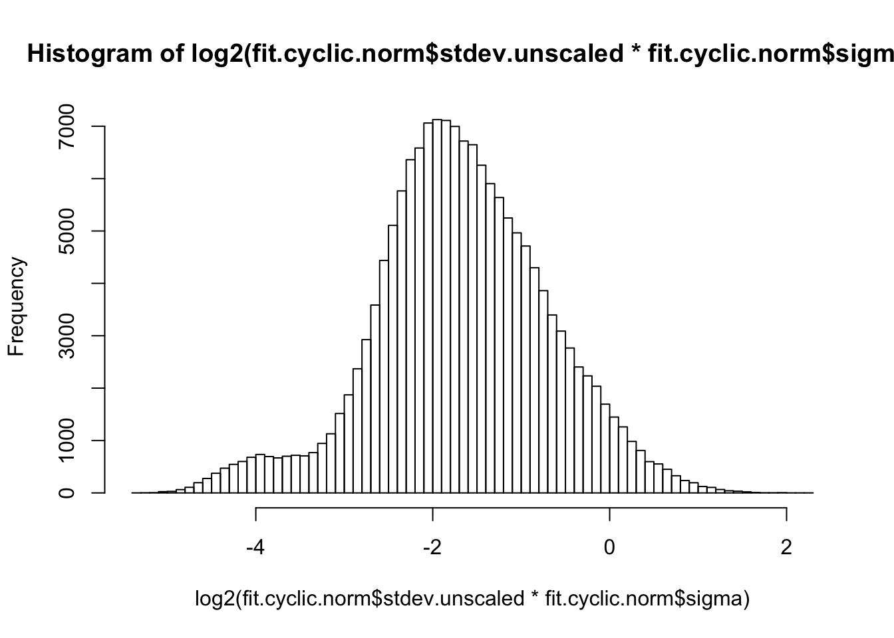
corfit <- duplicateCorrelation(cpm.voom.cyclic, design, block=samples$Individual)
corfit$consensus <- 0.2197275
#corfit$consensus <- 0.2177817
# Final voom on filtered data
cpm.voom.cyclic <- voom(dge_in_cutoff, design, normalize.method="cyclicloess", plot=TRUE, block=samples$Individual, correlation=corfit$consensus)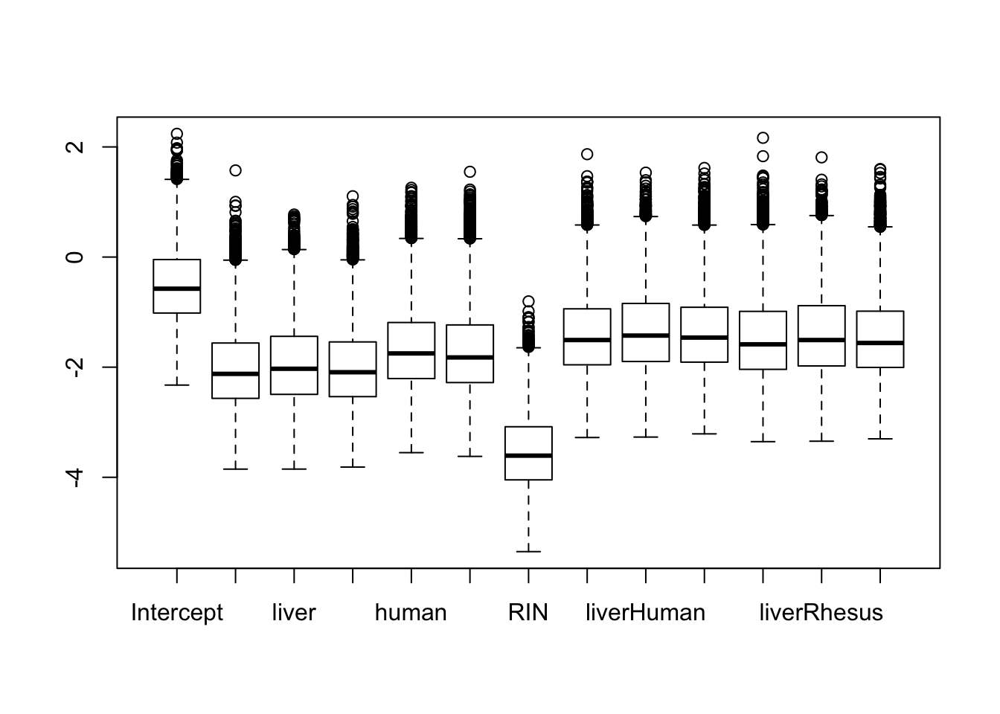
Fit the linear model
fit.cyclic.norm <- lmFit(cpm.voom.cyclic, design, plot = TRUE, block=samples$Individual, correlation=corfit$consensus)
fit.cyclic.norm <- eBayes(fit.cyclic.norm)
View(fit.cyclic.norm)
HvC_Heart =topTable(fit.cyclic.norm, coef=5, adjust="BH", number=Inf, sort.by="none")
# MA Plots
## If 'MA' is an 'MArrayLM' object, then the plot is a fitted model MA-plot in which the estimated coefficient is on the y-axis and the average A-value is on the x-axis.
#limma::plotMA(fit.cyclic.norm, array=1, xlab="average coefficient", ylab="estimated coefficient")
## - Potential caveat: variances could be different between human, chimp and rhesus (see Gordon Smyth email, 7 June 2013).
## We look at the standard error for each condition
hist(fit.cyclic.norm$stdev.unscaled * fit.cyclic.norm$sigma, breaks=100)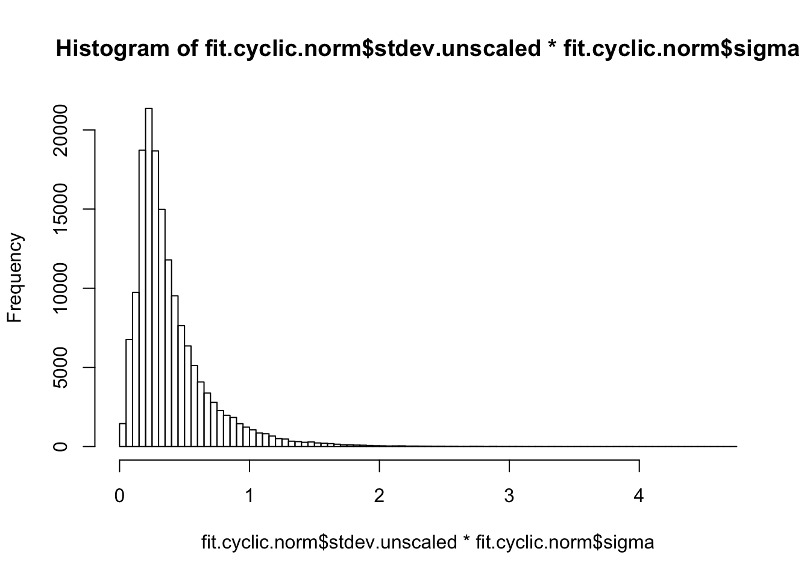
hist(log2(fit.cyclic.norm$stdev.unscaled * fit.cyclic.norm$sigma), breaks=100)
boxplot(log2(fit.cyclic.norm$stdev.unscaled * fit.cyclic.norm$sigma))## This seems to be pretty comparable between conditions. The human heart is higher, probably because of H1H missing and H3H with a bit strange behavior
stderror <- log2(fit.cyclic.norm$stdev.unscaled * fit.cyclic.norm$sigma)
boxplot(list(stderror[,1:4], stderror[,5:8], stderror[,9:12]))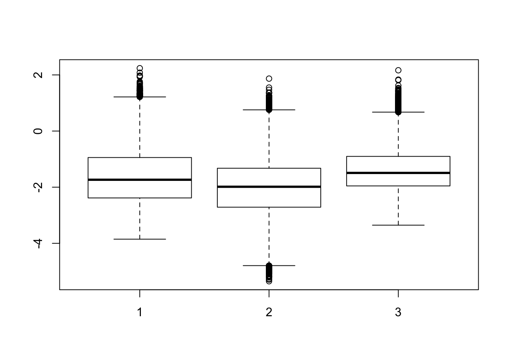
## A bit higher for human, and a bit lower for rhesus
boxplot(list(stderror[,2:4], stderror[,6:8], stderror[,8:12])) ## excluding heart samples 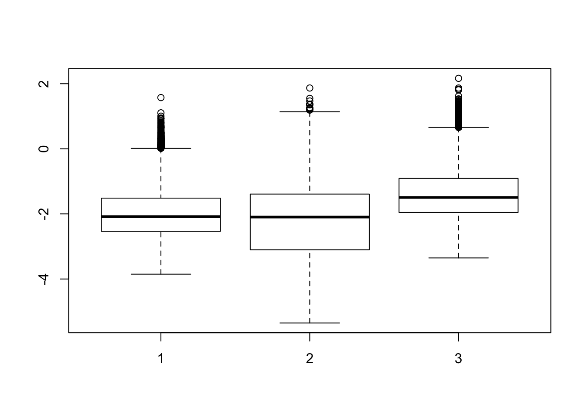
# In the contrast matrix, we have many comparisons for species and tissues individually
# Note: baseline is chimp heart
cm1 <- makeContrasts(HvC_Liver = human + liverHuman,
HvC_Lung = human + lungHuman,
HvC_Heart = human,
HvC_Kidney = human + kidneyHuman,
HvR_Liver = human + liverHuman - (rhesus + liverRhesus),
HvR_Lung = human + lungHuman - (rhesus + lungRhesus),
HvR_Heart = human - rhesus,
HvR_Kidney = human + kidneyHuman - (rhesus + kidneyRhesus),
CvR_Liver = -(rhesus + liverRhesus),
CvR_Lung = -(rhesus + lungRhesus),
CvR_Heart = -(rhesus),
CvR_Kidney = -(rhesus + kidneyRhesus),
H_HeartvLi = (human) - (human + liver + liverHuman),
H_HeartvLu = (human) - (human + lung + lungHuman),
H_HeartvK = (human) - (human + kidney + kidneyHuman),
H_LivLu = (human + liver + liverHuman) - (human + lung + lungHuman),
H_LivK = (human + liver + liverHuman) - (human + kidney + kidneyHuman),
H_LuvK = (human + lung + lungHuman) - (human + kidney + kidneyHuman),
C_HeartvLi = -(liver),
C_HeartvLu = -(lung),
C_HeartvK = -(kidney),
C_LivLu = liver - lung,
C_LivK = liver - kidney,
C_LuvK = lung - kidney,
R_HeartvLi = (rhesus) - (rhesus + liver + liverRhesus),
R_HeartvLu = (rhesus) - (rhesus + lung + lungRhesus),
R_HeartvK = (rhesus) - (rhesus + kidney + kidneyRhesus),
R_LivLu = (rhesus + liver + liverRhesus) - (rhesus + lung + lungRhesus),
R_LivK = (rhesus + liver + liverRhesus) - (rhesus + kidney + kidneyRhesus),
R_LuvK = (rhesus + lung + lungRhesus) - (rhesus + kidney + kidneyRhesus),
levels = design)
# Implement contrasts
contrasts_each_species <- contrasts.fit(fit.cyclic.norm, cm1)
fit1 <- eBayes(contrasts_each_species)
top3 <- list(HvC_Liver =topTable(fit1, coef=1, adjust="BH", number=Inf, sort.by="none"),
HvC_Lung =topTable(fit1, coef=2, adjust="BH", number=Inf, sort.by="none"),
HvC_Heart =topTable(fit1, coef=3, adjust="BH", number=Inf, sort.by="none"),
HvC_Kidney =topTable(fit1, coef=4, adjust="BH", number=Inf, sort.by="none"),
HvR_Liver =topTable(fit1, coef=5, adjust="BH", number=Inf, sort.by="none"),
HvR_Lung =topTable(fit1, coef=6, adjust="BH", number=Inf, sort.by="none"),
HvR_Heart =topTable(fit1, coef=7, adjust="BH", number=Inf, sort.by="none"),
HvR_Kidney =topTable(fit1, coef=8, adjust="BH", number=Inf, sort.by="none"),
CvR_Liver =topTable(fit1, coef=9, adjust="BH", number=Inf, sort.by="none"),
CvR_Lung =topTable(fit1, coef=10, adjust="BH", number=Inf, sort.by="none"),
CvR_Heart =topTable(fit1, coef=11, adjust="BH", number=Inf, sort.by="none"),
CvR_Kidney =topTable(fit1, coef=12, adjust="BH", number=Inf, sort.by="none"),
H_HeartvLi =topTable(fit1, coef=13, adjust="BH", number=Inf, sort.by="none"),
H_HeartvLu =topTable(fit1, coef=14, adjust="BH", number=Inf, sort.by="none"),
H_HeartvK =topTable(fit1, coef=15, adjust="BH", number=Inf, sort.by="none"),
H_LivLu =topTable(fit1, coef=16, adjust="BH", number=Inf, sort.by="none"),
H_LivK =topTable(fit1, coef=17, adjust="BH", number=Inf, sort.by="none"),
H_LuvK =topTable(fit1, coef=18, adjust="BH", number=Inf, sort.by="none"),
C_HeartvLi =topTable(fit1, coef=19, adjust="BH", number=Inf, sort.by="none"),
C_HeartvLu =topTable(fit1, coef=20, adjust="BH", number=Inf, sort.by="none"),
C_HeartvK =topTable(fit1, coef=21, adjust="BH", number=Inf, sort.by="none"),
C_LivLu =topTable(fit1, coef=22, adjust="BH", number=Inf, sort.by="none"),
C_LivK =topTable(fit1, coef=23, adjust="BH", number=Inf, sort.by="none"),
C_LuvK =topTable(fit1, coef=24, adjust="BH", number=Inf, sort.by="none"),
R_HeartvLi =topTable(fit1, coef=25, adjust="BH", number=Inf, sort.by="none"),
R_HeartvLu =topTable(fit1, coef=26, adjust="BH", number=Inf, sort.by="none"),
R_HeartvK =topTable(fit1, coef=27, adjust="BH", number=Inf, sort.by="none"),
R_LivLu =topTable(fit1, coef=28, adjust="BH", number=Inf, sort.by="none"),
R_LivK =topTable(fit1, coef=29, adjust="BH", number=Inf, sort.by="none"),
R_LuvK =topTable(fit1, coef=30, adjust="BH", number=Inf, sort.by="none") )
# Set FDR level at 1%
FDR_level <- 0.01
## DE between HvC
HvC_Liver =topTable(fit1, coef=1, adjust="BH", number=Inf, sort.by="none")
dim(HvC_Liver[which(HvC_Liver$adj.P.Val < FDR_level), ]) [1] 1364 7HvC_Lung =topTable(fit1, coef=2, adjust="BH", number=Inf, sort.by="none")
dim(HvC_Lung[which(HvC_Lung$adj.P.Val < FDR_level), ]) [1] 805 7HvC_Heart =topTable(fit1, coef=3, adjust="BH", number=Inf, sort.by="none")
dim(HvC_Heart[which(HvC_Heart$adj.P.Val < FDR_level), ]) [1] 2195 7HvC_Kidney =topTable(fit1, coef=4, adjust="BH", number=Inf, sort.by="none")
dim(HvC_Kidney[which(HvC_Kidney$adj.P.Val < FDR_level), ]) [1] 799 7mylist <- list()
mylist[["Liver"]] <- row.names(top3[[names(top3)[1]]])[top3[[names(top3)[1]]]$adj.P.Val < FDR_level]
mylist[["Lung"]] <- row.names(top3[[names(top3)[2]]])[top3[[names(top3)[2]]]$adj.P.Val < FDR_level]
mylist[["Heart"]] <- row.names(top3[[names(top3)[3]]])[top3[[names(top3)[3]]]$adj.P.Val < FDR_level]
mylist[["Kidney"]] <- row.names(top3[[names(top3)[4]]])[top3[[names(top3)[4]]]$adj.P.Val < FDR_level]
# Make
dev.off()null device
1 Four_comp <- venn.diagram(mylist, filename= NULL, main="DE genes between Humans and Chimps (FDR 1%)", cex=1.5 , fill = pal[1:4], lty=1, height=2000, width=3000)
grid.draw(Four_comp)
## DE between HvR
HvR_Liver =topTable(fit1, coef=5, adjust="BH", number=Inf, sort.by="none")
dim(HvR_Liver[which(HvR_Liver$adj.P.Val < FDR_level), ]) [1] 2868 7HvR_Lung =topTable(fit1, coef=6, adjust="BH", number=Inf, sort.by="none")
dim(HvR_Lung[which(HvR_Lung$adj.P.Val < FDR_level), ]) [1] 2833 7HvR_Heart =topTable(fit1, coef=7, adjust="BH", number=Inf, sort.by="none")
dim(HvR_Heart[which(HvR_Heart$adj.P.Val < FDR_level), ]) [1] 4098 7HvR_Kidney =topTable(fit1, coef=8, adjust="BH", number=Inf, sort.by="none")
dim(HvR_Kidney[which(HvR_Kidney$adj.P.Val < FDR_level), ]) [1] 2347 7mylist <- list()
mylist[["Liver"]] <- row.names(top3[[names(top3)[5]]])[top3[[names(top3)[5]]]$adj.P.Val < FDR_level]
mylist[["Lung"]] <- row.names(top3[[names(top3)[6]]])[top3[[names(top3)[6]]]$adj.P.Val < FDR_level]
mylist[["Heart"]] <- row.names(top3[[names(top3)[7]]])[top3[[names(top3)[7]]]$adj.P.Val < FDR_level]
mylist[["Kidney"]] <- row.names(top3[[names(top3)[8]]])[top3[[names(top3)[8]]]$adj.P.Val < FDR_level]
# Make
dev.off()null device
1 Four_comp <- venn.diagram(mylist, filename= NULL, main="DE genes between Humans and Rhesus (FDR 1%)", cex=1.5 , fill = pal[1:4], lty=1, height=2000, width=3000)
grid.draw(Four_comp)
## DE between CvR
CvR_Liver =topTable(fit1, coef=9, adjust="BH", number=Inf, sort.by="none")
dim(CvR_Liver[which(CvR_Liver$adj.P.Val < FDR_level), ]) [1] 3139 7CvR_Lung =topTable(fit1, coef=10, adjust="BH", number=Inf, sort.by="none")
dim(CvR_Lung[which(CvR_Lung$adj.P.Val < FDR_level), ]) [1] 1917 7CvR_Heart =topTable(fit1, coef=11, adjust="BH", number=Inf, sort.by="none")
dim(CvR_Heart[which(CvR_Heart$adj.P.Val < FDR_level), ]) [1] 3218 7CvR_Kidney =topTable(fit1, coef=12, adjust="BH", number=Inf, sort.by="none")
dim(CvR_Kidney[which(CvR_Kidney$adj.P.Val < FDR_level), ]) [1] 2695 7mylist <- list()
mylist[["Liver"]] <- row.names(top3[[names(top3)[9]]])[top3[[names(top3)[9]]]$adj.P.Val < FDR_level]
mylist[["Lung"]] <- row.names(top3[[names(top3)[10]]])[top3[[names(top3)[10]]]$adj.P.Val < FDR_level]
mylist[["Heart"]] <- row.names(top3[[names(top3)[11]]])[top3[[names(top3)[11]]]$adj.P.Val < FDR_level]
mylist[["Kidney"]] <- row.names(top3[[names(top3)[12]]])[top3[[names(top3)[12]]]$adj.P.Val < FDR_level]
# Make
dev.off()null device
1 Four_comp <- venn.diagram(mylist, filename= NULL, main="DE genes between Chimps and Rhesus (FDR 1%)", cex=1.5 , fill = pal[1:4], lty=1, height=2000, width=3000)
grid.draw(Four_comp)
# DE between tissues within a species
# Within humans
H_HeartvLi =topTable(fit1, coef=13, adjust="BH", number=Inf, sort.by="none")
dim(H_HeartvLi[which(H_HeartvLi$adj.P.Val < FDR_level), ]) [1] 4776 7H_HeartvLu =topTable(fit1, coef=14, adjust="BH", number=Inf, sort.by="none")
dim(H_HeartvLu[which(H_HeartvLu$adj.P.Val < FDR_level), ]) [1] 4037 7H_HeartvK =topTable(fit1, coef=15, adjust="BH", number=Inf, sort.by="none")
dim(H_HeartvK[which(H_HeartvK$adj.P.Val < FDR_level), ]) [1] 4224 7H_LivLu =topTable(fit1, coef=16, adjust="BH", number=Inf, sort.by="none")
dim(H_LivLu[which(H_LivLu$adj.P.Val < FDR_level), ]) [1] 4701 7H_LivK =topTable(fit1, coef=17, adjust="BH", number=Inf, sort.by="none")
dim(H_LivK[which(H_LivK$adj.P.Val < FDR_level), ]) [1] 4248 7H_LuvK =topTable(fit1, coef=18, adjust="BH", number=Inf, sort.by="none")
dim(H_LuvK[which(H_LuvK$adj.P.Val < FDR_level), ]) [1] 3695 7 # Within chimps
C_HeartvLi =topTable(fit1, coef=19, adjust="BH", number=Inf, sort.by="none")
dim(C_HeartvLi[which(C_HeartvLi$adj.P.Val < FDR_level), ]) [1] 6295 7C_HeartvLu =topTable(fit1, coef=20, adjust="BH", number=Inf, sort.by="none")
dim(C_HeartvLu[which(C_HeartvLu$adj.P.Val < FDR_level), ]) [1] 5365 7C_HeartvK =topTable(fit1, coef=21, adjust="BH", number=Inf, sort.by="none")
dim(C_HeartvK[which(C_HeartvK$adj.P.Val < FDR_level), ]) [1] 4971 7C_LivLu =topTable(fit1, coef=22, adjust="BH", number=Inf, sort.by="none")
dim(C_LivLu[which(C_LivLu$adj.P.Val < FDR_level), ]) [1] 6247 7C_LivK =topTable(fit1, coef=23, adjust="BH", number=Inf, sort.by="none")
dim(C_LivK[which(C_LivK$adj.P.Val < FDR_level), ]) [1] 4625 7C_LuvK =topTable(fit1, coef=24, adjust="BH", number=Inf, sort.by="none")
dim(C_LuvK[which(C_LuvK$adj.P.Val < FDR_level), ]) [1] 4623 7 # Within rhesus
R_HeartvLi =topTable(fit1, coef=25, adjust="BH", number=Inf, sort.by="none")
dim(R_HeartvLi[which(R_HeartvLi$adj.P.Val < FDR_level), ]) [1] 6933 7R_HeartvLu =topTable(fit1, coef=26, adjust="BH", number=Inf, sort.by="none")
dim(R_HeartvLu[which(R_HeartvLu$adj.P.Val < FDR_level), ]) [1] 6814 7R_HeartvK =topTable(fit1, coef=27, adjust="BH", number=Inf, sort.by="none")
dim(R_HeartvK[which(R_HeartvK$adj.P.Val < FDR_level), ]) [1] 5980 7R_LivLu =topTable(fit1, coef=28, adjust="BH", number=Inf, sort.by="none")
dim(R_LivLu[which(R_LivLu$adj.P.Val < FDR_level), ]) [1] 7027 7R_LivK =topTable(fit1, coef=29, adjust="BH", number=Inf, sort.by="none")
dim(R_LivK[which(R_LivK$adj.P.Val < FDR_level), ]) [1] 5126 7R_LuvK =topTable(fit1, coef=30, adjust="BH", number=Inf, sort.by="none")
dim(R_LuvK[which(R_LuvK$adj.P.Val < FDR_level), ]) [1] 5721 7## DE between Heart and Liver
mylist <- list()
mylist[["Human"]] <- row.names(top3[[names(top3)[13]]])[top3[[names(top3)[13]]]$adj.P.Val < FDR_level]
mylist[["Chimp"]] <- row.names(top3[[names(top3)[19]]])[top3[[names(top3)[19]]]$adj.P.Val < FDR_level]
mylist[["Rhesus"]] <- row.names(top3[[names(top3)[25]]])[top3[[names(top3)[25]]]$adj.P.Val < FDR_level]
# Make
dev.off()null device
1 Four_comp <- venn.diagram(mylist, filename= NULL, main="DE genes between Heart and Liver (FDR 1%)", cex=1.5 , fill = pal[1:3], lty=1, height=2000, width=3000)
grid.draw(Four_comp)
## DE between Heart and Lung
mylist <- list()
mylist[["Human"]] <- row.names(top3[[names(top3)[14]]])[top3[[names(top3)[14]]]$adj.P.Val < FDR_level]
mylist[["Chimp"]] <- row.names(top3[[names(top3)[20]]])[top3[[names(top3)[20]]]$adj.P.Val < FDR_level]
mylist[["Rhesus"]] <- row.names(top3[[names(top3)[26]]])[top3[[names(top3)[26]]]$adj.P.Val < FDR_level]
# Make
dev.off()null device
1 Four_comp <- venn.diagram(mylist, filename= NULL, main="DE genes between Heart and Lung (FDR 1%)", cex=1.5 , fill = pal[1:3], lty=1, height=2000, width=3000)
grid.draw(Four_comp)
## DE between Heart and Kidney
mylist <- list()
mylist[["Human"]] <- row.names(top3[[names(top3)[15]]])[top3[[names(top3)[15]]]$adj.P.Val < FDR_level]
mylist[["Chimp"]] <- row.names(top3[[names(top3)[21]]])[top3[[names(top3)[21]]]$adj.P.Val < FDR_level]
mylist[["Rhesus"]] <- row.names(top3[[names(top3)[27]]])[top3[[names(top3)[27]]]$adj.P.Val < FDR_level]
# Make
dev.off()null device
1 Four_comp <- venn.diagram(mylist, filename= NULL, main="DE genes between Heart and Kidney (FDR 1%)", cex=1.5 , fill = pal[1:3], lty=1, height=2000, width=3000)
grid.draw(Four_comp)
## DE between Liver and Lung
mylist <- list()
mylist[["Human"]] <- row.names(top3[[names(top3)[16]]])[top3[[names(top3)[16]]]$adj.P.Val < FDR_level]
mylist[["Chimp"]] <- row.names(top3[[names(top3)[22]]])[top3[[names(top3)[22]]]$adj.P.Val < FDR_level]
mylist[["Rhesus"]] <- row.names(top3[[names(top3)[28]]])[top3[[names(top3)[28]]]$adj.P.Val < FDR_level]
# Make
dev.off()null device
1 Four_comp <- venn.diagram(mylist, filename= NULL, main="DE genes between Liver and Lung (FDR 1%)", cex=1.5 , fill = pal[1:3], lty=1, height=2000, width=3000)
grid.draw(Four_comp)
## DE between Liver and Kidney
mylist <- list()
mylist[["Human"]] <- row.names(top3[[names(top3)[17]]])[top3[[names(top3)[17]]]$adj.P.Val < FDR_level]
mylist[["Chimp"]] <- row.names(top3[[names(top3)[23]]])[top3[[names(top3)[23]]]$adj.P.Val < FDR_level]
mylist[["Rhesus"]] <- row.names(top3[[names(top3)[29]]])[top3[[names(top3)[29]]]$adj.P.Val < FDR_level]
# Make
dev.off()null device
1 Four_comp <- venn.diagram(mylist, filename= NULL, main="DE genes between Liver and Kidney (FDR 1%)", cex=1.5 , fill = pal[1:3], lty=1, height=2000, width=3000)
grid.draw(Four_comp)
## DE between Lung and Kidney
mylist <- list()
mylist[["Human"]] <- row.names(top3[[names(top3)[18]]])[top3[[names(top3)[18]]]$adj.P.Val < FDR_level]
mylist[["Chimp"]] <- row.names(top3[[names(top3)[24]]])[top3[[names(top3)[24]]]$adj.P.Val < FDR_level]
mylist[["Rhesus"]] <- row.names(top3[[names(top3)[30]]])[top3[[names(top3)[30]]]$adj.P.Val < FDR_level]
# Make
dev.off()null device
1 Four_comp <- venn.diagram(mylist, filename= NULL, main="DE genes between Lung and Kidney (FDR 1%)", cex=1.5 , fill = pal[1:3], lty=1, height=2000, width=3000)
grid.draw(Four_comp)Make Venn Diagrams for directionality using ASH
In this section, we are going to detect genes that have differences in the same direction (false sign rate = 1%).
Run ASH
# Prepare the data for ASH
tests <- colnames(fit1$coefficients)
results <- vector(length = length(tests), mode = "list")
names(results) <- tests
# Perform multiple testing correction with adaptive shrinkage (ASH)
#
# x - object MArrayLM from eBayes output
# coef - coefficient tested by eBayes
run_ash <- function(x, coef){
#stopifnot(class(x) == "MArrayLM", coef %in% colnames(x$coefficients),
# length(unique(x$df.total) == 1))
result <- ash(betahat = x$coefficients[, coef], sebetahat = x$stdev.unscaled[, coef] * sqrt(x$s2.post), df = x$df.total[1])
return(result)
}
get_results <- function(x, number = nrow(x$coefficients), sort.by = "none",
...) {
# x - object MArrayLM from eBayes output
# ... - additional arguments passed to topTable
stopifnot(class(x) == "MArrayLM")
results <- topTable(x, number = number, sort.by = sort.by, ...)
return(results)
}
# Get lfsr, lfdr, s value, q value, and a beta_est value.
for (test in tests) {
# Extract limma results
results[[test]] <- get_results(fit1, coef = test)
# Add mutliple testing correction with ASH
output_ash <- run_ash(fit1, coef = test)
results[[test]] <- cbind(results[[test]], sebetahat = output_ash$data$s, lfsr = output_ash$result$lfsr,
lfdr = output_ash$result$lfdr, qvalue = output_ash$result$qvalue,
svalue = output_ash$result$svalue, beta_est = output_ash$result$PosteriorMean, se_est =
output_ash$result$PosteriorSD)
}Due to absence of package REBayes, switching to EM algorithm
Due to absence of package REBayes, switching to EM algorithm
Due to absence of package REBayes, switching to EM algorithm
Due to absence of package REBayes, switching to EM algorithm
Due to absence of package REBayes, switching to EM algorithm
Due to absence of package REBayes, switching to EM algorithm
Due to absence of package REBayes, switching to EM algorithm
Due to absence of package REBayes, switching to EM algorithm
Due to absence of package REBayes, switching to EM algorithm
Due to absence of package REBayes, switching to EM algorithm
Due to absence of package REBayes, switching to EM algorithm
Due to absence of package REBayes, switching to EM algorithm
Due to absence of package REBayes, switching to EM algorithm
Due to absence of package REBayes, switching to EM algorithm
Due to absence of package REBayes, switching to EM algorithm
Due to absence of package REBayes, switching to EM algorithm
Due to absence of package REBayes, switching to EM algorithm
Due to absence of package REBayes, switching to EM algorithm
Due to absence of package REBayes, switching to EM algorithm
Due to absence of package REBayes, switching to EM algorithm
Due to absence of package REBayes, switching to EM algorithm
Due to absence of package REBayes, switching to EM algorithm
Due to absence of package REBayes, switching to EM algorithm
Due to absence of package REBayes, switching to EM algorithm
Due to absence of package REBayes, switching to EM algorithm
Due to absence of package REBayes, switching to EM algorithm
Due to absence of package REBayes, switching to EM algorithm
Due to absence of package REBayes, switching to EM algorithm
Due to absence of package REBayes, switching to EM algorithm
Due to absence of package REBayes, switching to EM algorithm# Save results from analysis with limma and ash.
saveRDS(results, file.path(data_dir, "combined-limma.rds"))Find where the genes are upregulated between tissues
# Set false sign rate
FDR_level <- 0.01
FSR_level <- 0.01
# Heart versus kidney
mylist <- list()
test <- "H_HeartvK"
mylist[["Human"]] <- (results[[test]]$genes)[results[[test]]$adj.P.Val < FDR_level & results[[test]]$svalue < FSR_level & results[[test]]$beta_est > 0]
test <- "C_HeartvK"
mylist[["Chimpanzee"]] <- (results[[test]]$genes)[results[[test]]$adj.P.Val < FDR_level & results[[test]]$adj.P.Val < FDR_level & results[[test]]$svalue < FSR_level & results[[test]]$beta_est > 0]
test <- "R_HeartvK"
mylist[["Rhesus Macaque"]] <- (results[[test]]$genes)[results[[test]]$adj.P.Val < FDR_level & results[[test]]$svalue < FSR_level & results[[test]]$beta_est > 0]
# Make Venn Diagram
dev.off()null device
1 Heart_kidney <- venn.diagram(mylist, filename= NULL, main="Upregulated in Heart compared to Kidney (FSR 1%)", main.cex = 2, cat.cex = 1.5, cex=2.5 , fill = pal[1:3], lty=1, height=2000, width=3000)
grid.draw(Heart_kidney)
# Heart versus liver
mylist <- list()
test <- "H_HeartvLi"
mylist[["Human"]] <- (results[[test]]$genes)[results[[test]]$adj.P.Val < FDR_level & results[[test]]$svalue < FSR_level & results[[test]]$beta_est > 0]
test <- "C_HeartvLi"
mylist[["Chimpanzee"]] <- (results[[test]]$genes)[results[[test]]$adj.P.Val < FDR_level & results[[test]]$svalue < FSR_level & results[[test]]$beta_est > 0]
test <- "R_HeartvLi"
mylist[["Rhesus Macaque"]] <- (results[[test]]$genes)[results[[test]]$adj.P.Val < FDR_level & results[[test]]$svalue < FSR_level & results[[test]]$beta_est > 0]
# Make Venn Diagram
dev.off()null device
1 Heart_liver <- venn.diagram(mylist, filename= NULL, main="Upregulated in Heart compared to Liver (FSR 1%)", main.cex = 2, cat.cex = 1.5, cex=2.5 , fill = pal[1:3], lty=1, height=2000, width=3000)
grid.draw(Heart_liver)
# Heart versus lung
mylist <- list()
test <- "H_HeartvLu"
mylist[["Human"]] <- (results[[test]]$genes)[results[[test]]$adj.P.Val < FDR_level & results[[test]]$svalue < FSR_level & results[[test]]$beta_est > 0]
test <- "C_HeartvLu"
mylist[["Chimpanzee"]] <- (results[[test]]$genes)[results[[test]]$adj.P.Val < FDR_level & results[[test]]$svalue < FSR_level & results[[test]]$beta_est > 0]
test <- "R_HeartvLu"
mylist[["Rhesus Macaque"]] <- (results[[test]]$genes)[results[[test]]$adj.P.Val < FDR_level & results[[test]]$svalue < FSR_level & results[[test]]$beta_est > 0]
# Make Venn Diagram
dev.off()null device
1 Heart_lung <- venn.diagram(mylist, filename= NULL, main="Upregulated in Heart compared to Lung (FSR 1%)", main.cex = 2, cat.cex = 1.5, cex=2.5, fill = pal[1:3], lty=1, height=2000, width=3000)
grid.draw(Heart_lung)
# Liver versus lung
mylist <- list()
test <- "H_LivLu"
mylist[["Human"]] <- (results[[test]]$genes)[results[[test]]$adj.P.Val < FDR_level & results[[test]]$svalue < FSR_level & results[[test]]$beta_est > 0]
test <- "C_LivLu"
mylist[["Chimpanzee"]] <- (results[[test]]$genes)[results[[test]]$adj.P.Val < FDR_level & results[[test]]$svalue < FSR_level & results[[test]]$beta_est > 0]
test <- "R_LivLu"
mylist[["Rhesus Macaque"]] <- (results[[test]]$genes)[results[[test]]$adj.P.Val < FDR_level & results[[test]]$svalue < FSR_level & results[[test]]$beta_est > 0]
# Make Venn Diagram
dev.off()null device
1 Liver_lung <- venn.diagram(mylist, filename= NULL, main="Upregulated in Liver compared to Lung (FSR 1%)", main.cex = 2, cat.cex = 1.5, cex=2.5, fill = pal[1:3], lty=1, height=2000, width=3000)
grid.draw(Liver_lung)
# Liver versus kidney
mylist <- list()
test <- "H_LivK"
mylist[["Human"]] <- (results[[test]]$genes)[results[[test]]$adj.P.Val < FDR_level & results[[test]]$svalue < FSR_level & results[[test]]$beta_est > 0]
test <- "C_LivK"
mylist[["Chimpanzee"]] <- (results[[test]]$genes)[results[[test]]$adj.P.Val < FDR_level & results[[test]]$svalue < FSR_level & results[[test]]$beta_est > 0]
test <- "R_LivK"
mylist[["Rhesus Macaque"]] <- (results[[test]]$genes)[results[[test]]$adj.P.Val < FDR_level & results[[test]]$svalue < FSR_level & results[[test]]$beta_est > 0]
# Make Venn Diagram
dev.off()null device
1 Liver_kidney <- venn.diagram(mylist, filename= NULL, main="Upregulated in Liver compared to Kidney (FSR 1%)", main.cex = 2, cat.cex = 1.5, cex=2.5, fill = pal[1:3], lty=1, height=2000, width=3000)
grid.draw(Liver_kidney)
# Lung versus Kidney
mylist <- list()
test <- "H_LuvK"
mylist[["Human"]] <- (results[[test]]$genes)[results[[test]]$adj.P.Val < FDR_level & results[[test]]$svalue < FSR_level & results[[test]]$beta_est > 0]
test <- "C_LuvK"
mylist[["Chimpanzee"]] <- (results[[test]]$genes)[results[[test]]$adj.P.Val < FDR_level & results[[test]]$svalue < FSR_level & results[[test]]$beta_est > 0]
test <- "R_LuvK"
mylist[["Rhesus Macaque"]] <- (results[[test]]$genes)[results[[test]]$adj.P.Val < FDR_level & results[[test]]$svalue < FSR_level & results[[test]]$beta_est > 0]
# Make Venn Diagram
dev.off()null device
1 Lung_kidney <- venn.diagram(mylist, filename= NULL, main="Upregulated in Lung compared to Kidney (FSR 1%)", main.cex = 2, cat.cex = 1.5, cex=2.5, fill = pal[1:3], lty=1, height=2000, width=3000)
grid.draw(Lung_kidney)Downregulated
# Set false sign rate
FDR_level <- 0.01
FSR_level <- 0.01
# Heart versus kidney
mylist <- list()
test <- "H_HeartvK"
mylist[["Human"]] <- (results[[test]]$genes)[results[[test]]$adj.P.Val < FDR_level & results[[test]]$svalue < FSR_level & results[[test]]$beta_est < 0]
test <- "C_HeartvK"
mylist[["Chimpanzee"]] <- (results[[test]]$genes)[results[[test]]$adj.P.Val < FDR_level & results[[test]]$adj.P.Val < FDR_level & results[[test]]$svalue < FSR_level & results[[test]]$beta_est < 0]
test <- "R_HeartvK"
mylist[["Rhesus Macaque"]] <- (results[[test]]$genes)[results[[test]]$adj.P.Val < FDR_level & results[[test]]$svalue < FSR_level & results[[test]]$beta_est < 0]
# Make Venn Diagram
dev.off()null device
1 Heart_kidney <- venn.diagram(mylist, filename= NULL, main="Downregulated in Heart compared to Kidney (FSR 1%)", main.cex = 2, cat.cex = 1.5, cex=2.5 , fill = pal[1:3], lty=1, height=2000, width=3000)
grid.draw(Heart_kidney)
# Heart versus liver
mylist <- list()
test <- "H_HeartvLi"
mylist[["Human"]] <- (results[[test]]$genes)[results[[test]]$adj.P.Val < FDR_level & results[[test]]$svalue < FSR_level & results[[test]]$beta_est > 0]
test <- "C_HeartvLi"
mylist[["Chimpanzee"]] <- (results[[test]]$genes)[results[[test]]$adj.P.Val < FDR_level & results[[test]]$svalue < FSR_level & results[[test]]$beta_est > 0]
test <- "R_HeartvLi"
mylist[["Rhesus Macaque"]] <- (results[[test]]$genes)[results[[test]]$adj.P.Val < FDR_level & results[[test]]$svalue < FSR_level & results[[test]]$beta_est > 0]
# Make Venn Diagram
dev.off()null device
1 Heart_liver <- venn.diagram(mylist, filename= NULL, main="Upregulated in Heart compared to Liver (FSR 1%)", main.cex = 2, cat.cex = 1.5, cex=2.5 , fill = pal[1:3], lty=1, height=2000, width=3000)
grid.draw(Heart_liver)
# Heart versus lung
mylist <- list()
test <- "H_HeartvLu"
mylist[["Human"]] <- (results[[test]]$genes)[results[[test]]$adj.P.Val < FDR_level & results[[test]]$svalue < FSR_level & results[[test]]$beta_est > 0]
test <- "C_HeartvLu"
mylist[["Chimpanzee"]] <- (results[[test]]$genes)[results[[test]]$adj.P.Val < FDR_level & results[[test]]$svalue < FSR_level & results[[test]]$beta_est > 0]
test <- "R_HeartvLu"
mylist[["Rhesus Macaque"]] <- (results[[test]]$genes)[results[[test]]$adj.P.Val < FDR_level & results[[test]]$svalue < FSR_level & results[[test]]$beta_est > 0]
# Make Venn Diagram
dev.off()null device
1 Heart_lung <- venn.diagram(mylist, filename= NULL, main="Upregulated in Heart compared to Lung (FSR 1%)", main.cex = 2, cat.cex = 1.5, cex=2.5, fill = pal[1:3], lty=1, height=2000, width=3000)
grid.draw(Heart_lung)
# Liver versus lung
mylist <- list()
test <- "H_LivLu"
mylist[["Human"]] <- (results[[test]]$genes)[results[[test]]$adj.P.Val < FDR_level & results[[test]]$svalue < FSR_level & results[[test]]$beta_est > 0]
test <- "C_LivLu"
mylist[["Chimpanzee"]] <- (results[[test]]$genes)[results[[test]]$adj.P.Val < FDR_level & results[[test]]$svalue < FSR_level & results[[test]]$beta_est > 0]
test <- "R_LivLu"
mylist[["Rhesus Macaque"]] <- (results[[test]]$genes)[results[[test]]$adj.P.Val < FDR_level & results[[test]]$svalue < FSR_level & results[[test]]$beta_est > 0]
# Make Venn Diagram
dev.off()null device
1 Liver_lung <- venn.diagram(mylist, filename= NULL, main="Upregulated in Liver compared to Lung (FSR 1%)", main.cex = 2, cat.cex = 1.5, cex=2.5, fill = pal[1:3], lty=1, height=2000, width=3000)
grid.draw(Liver_lung)
# Liver versus kidney
mylist <- list()
test <- "H_LivK"
mylist[["Human"]] <- (results[[test]]$genes)[results[[test]]$adj.P.Val < FDR_level & results[[test]]$svalue < FSR_level & results[[test]]$beta_est > 0]
test <- "C_LivK"
mylist[["Chimpanzee"]] <- (results[[test]]$genes)[results[[test]]$adj.P.Val < FDR_level & results[[test]]$svalue < FSR_level & results[[test]]$beta_est > 0]
test <- "R_LivK"
mylist[["Rhesus Macaque"]] <- (results[[test]]$genes)[results[[test]]$adj.P.Val < FDR_level & results[[test]]$svalue < FSR_level & results[[test]]$beta_est > 0]
# Make Venn Diagram
dev.off()null device
1 Liver_kidney <- venn.diagram(mylist, filename= NULL, main="Upregulated in Liver compared to Kidney (FSR 1%)", main.cex = 2, cat.cex = 1.5, cex=2.5, fill = pal[1:3], lty=1, height=2000, width=3000)
grid.draw(Liver_kidney)
# Lung versus Kidney
mylist <- list()
test <- "H_LuvK"
mylist[["Human"]] <- (results[[test]]$genes)[results[[test]]$adj.P.Val < FDR_level & results[[test]]$svalue < FSR_level & results[[test]]$beta_est > 0]
test <- "C_LuvK"
mylist[["Chimpanzee"]] <- (results[[test]]$genes)[results[[test]]$adj.P.Val < FDR_level & results[[test]]$svalue < FSR_level & results[[test]]$beta_est > 0]
test <- "R_LuvK"
mylist[["Rhesus Macaque"]] <- (results[[test]]$genes)[results[[test]]$adj.P.Val < FDR_level & results[[test]]$svalue < FSR_level & results[[test]]$beta_est > 0]
# Make Venn Diagram
dev.off()null device
1 Lung_kidney <- venn.diagram(mylist, filename= NULL, main="Upregulated in Lung compared to Kidney (FSR 1%)", main.cex = 2, cat.cex = 1.5, cex=2.5, fill = pal[1:3], lty=1, height=2000, width=3000)
grid.draw(Lung_kidney)exp <- t(as.data.frame(cpm_12184[grepl("ENSG00000118194", rownames(cpm_12184)), ]))
make_exp_df <- as.data.frame(cbind(exp, species, tissue))
make_exp_df$species <- as.factor(make_exp_df$species)
keep <- c(1,2,5,6,9,10,13,14,17,20,21,24,25,28,29, 32, 33, 36, 37, 40, 41, 44, 45)
make_exp_df <- make_exp_df[keep,]
levels(make_exp_df$species) <- c("Chimpanzee", "Human", "Rhesus")
colnames(make_exp_df) <- c("CPM", "Species", "Tissue")
ggplot(make_exp_df, aes(x=as.factor(Tissue), y=CPM, fill=as.factor(Tissue))) + geom_boxplot() + facet_wrap(~Species) + xlab("Tissue") + ylab("Normalized Expression") + scale_x_discrete(labels=c("Heart","Kidney","Liver", "Lung")) + bjp + theme(legend.position="none") + ggtitle("TNNT2 (ENSG00000104951)") 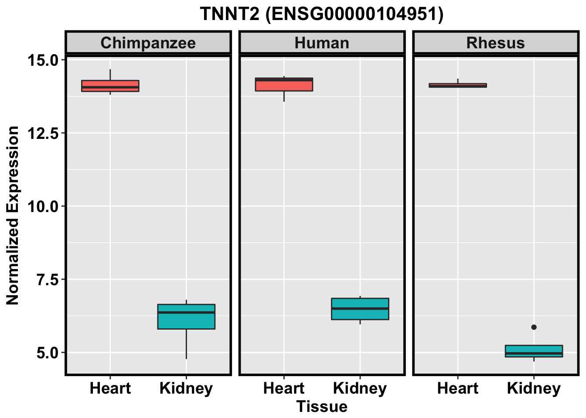
Find where the genes are upregulated between species
# Set false sign rate
FSR_level <- 0.01
# DE between humans and chimpanzees
mylist <- list()
test <- "HvC_Liver"
mylist[["Liver"]] <- (results[[test]]$genes)[results[[test]]$adj.P.Val < FDR_level & results[[test]]$svalue < FSR_level & results[[test]]$beta_est > 0]
test <- "HvC_Lung"
mylist[["Lung"]] <- (results[[test]]$genes)[results[[test]]$adj.P.Val < FDR_level & results[[test]]$svalue < FSR_level & results[[test]]$beta_est > 0]
test <- "HvC_Heart"
mylist[["Heart"]] <- (results[[test]]$genes)[results[[test]]$adj.P.Val < FDR_level & results[[test]]$svalue < FSR_level & results[[test]]$beta_est > 0]
test <- "HvC_Kidney"
mylist[["Kidney"]] <- (results[[test]]$genes)[results[[test]]$adj.P.Val < FDR_level & results[[test]]$svalue < FSR_level & results[[test]]$beta_est > 0]
# Make Venn Diagram
dev.off()null device
1 Human_chimp_up <- venn.diagram(mylist, filename= NULL, main="Upregulated in Humans compared to Chimps (FSR 1%)", main.cex = 2, cat.cex = 1.5, cex=2.5, fill = pal[1:4], lty=1, height=2000, width=3000)
grid.draw(Human_chimp_up)
# DE between humans and rhesus
mylist <- list()
test <- "HvR_Liver"
mylist[["Liver"]] <- (results[[test]]$genes)[results[[test]]$adj.P.Val < FDR_level & results[[test]]$svalue < FSR_level & results[[test]]$beta_est > 0]
test <- "HvR_Lung"
mylist[["Lung"]] <- (results[[test]]$genes)[results[[test]]$adj.P.Val < FDR_level & results[[test]]$svalue < FSR_level & results[[test]]$beta_est > 0]
test <- "HvR_Heart"
mylist[["Heart"]] <- (results[[test]]$genes)[results[[test]]$adj.P.Val < FDR_level & results[[test]]$svalue < FSR_level & results[[test]]$beta_est > 0]
test <- "HvR_Kidney"
mylist[["Kidney"]] <- (results[[test]]$genes)[results[[test]]$adj.P.Val < FDR_level & results[[test]]$svalue < FSR_level & results[[test]]$beta_est > 0]
# Make Venn Diagram
dev.off()null device
1 Human_rhesus_up <- venn.diagram(mylist, filename= NULL, main="Upregulated in Humans compared to Rhesus (FSR 1%)", main.cex = 2, cat.cex = 1.5, cex=2.5, fill = pal[1:4], lty=1, height=2000, width=3000)
grid.draw(Human_rhesus_up)
# DE between chimpanzees and rhesus
mylist <- list()
test <- "CvR_Liver"
mylist[["Liver"]] <- (results[[test]]$genes)[results[[test]]$adj.P.Val < FDR_level & results[[test]]$svalue < FSR_level & results[[test]]$beta_est > 0]
test <- "CvR_Lung"
mylist[["Lung"]] <- (results[[test]]$genes)[results[[test]]$adj.P.Val < FDR_level & results[[test]]$svalue < FSR_level & results[[test]]$beta_est > 0]
test <- "CvR_Heart"
mylist[["Heart"]] <- (results[[test]]$genes)[results[[test]]$adj.P.Val < FDR_level & results[[test]]$svalue < FSR_level & results[[test]]$beta_est > 0]
test <- "CvR_Kidney"
mylist[["Kidney"]] <- (results[[test]]$genes)[results[[test]]$adj.P.Val < FDR_level & results[[test]]$svalue < FSR_level & results[[test]]$beta_est > 0]
# Make Venn Diagram
dev.off()null device
1 Chimp_rhesus_up <- venn.diagram(mylist, filename= NULL, main="Upregulated in Chimps relative to Rhesus (FSR 1%)", main.cex = 2, cat.cex = 1.5, cex=2.5, fill = pal[1:4], lty=1, height=2000, width=3000)
grid.draw(Chimp_rhesus_up)## Example of Find where the genes are downregulated between species
# Set false sign rate
FSR_level <- 0.01
# DE between humans and chimpanzees
mylist <- list()
test <- "HvC_Liver"
mylist[["Liver"]] <- (results[[test]]$genes)[results[[test]]$adj.P.Val < FDR_level & results[[test]]$svalue < FSR_level & results[[test]]$beta_est < 0]
test <- "HvC_Lung"
mylist[["Lung"]] <- (results[[test]]$genes)[results[[test]]$adj.P.Val < FDR_level & results[[test]]$svalue < FSR_level & results[[test]]$beta_est < 0]
test <- "HvC_Heart"
mylist[["Heart"]] <- (results[[test]]$genes)[results[[test]]$adj.P.Val < FDR_level & results[[test]]$svalue < FSR_level & results[[test]]$beta_est < 0]
test <- "HvC_Kidney"
mylist[["Kidney"]] <- (results[[test]]$genes)[results[[test]]$adj.P.Val < FDR_level & results[[test]]$svalue < FSR_level & results[[test]]$beta_est < 0]
# Make Venn Diagram
dev.off()null device
1 Human_chimp_down <- venn.diagram(mylist, filename= NULL, main="Downregulated in Humans compared to Chimps (FSR 1%)", main.cex = 2, cat.cex = 1.5, cex=2.5, fill = pal[1:4], lty=1, height=2000, width=3000)
grid.draw(Human_chimp_down)
# DE between humans and rhesus
mylist <- list()
test <- "HvR_Liver"
mylist[["Liver"]] <- (results[[test]]$genes)[results[[test]]$adj.P.Val < FDR_level & results[[test]]$svalue < FSR_level & results[[test]]$beta_est < 0]
test <- "HvR_Lung"
mylist[["Lung"]] <- (results[[test]]$genes)[results[[test]]$adj.P.Val < FDR_level & results[[test]]$svalue < FSR_level & results[[test]]$beta_est < 0]
test <- "HvR_Heart"
mylist[["Heart"]] <- (results[[test]]$genes)[results[[test]]$adj.P.Val < FDR_level & results[[test]]$svalue < FSR_level & results[[test]]$beta_est < 0]
test <- "HvR_Kidney"
mylist[["Kidney"]] <- (results[[test]]$genes)[results[[test]]$adj.P.Val < FDR_level & results[[test]]$svalue < FSR_level & results[[test]]$beta_est < 0]
# Make Venn Diagram
dev.off()null device
1 Human_rhesus_down <- venn.diagram(mylist, filename= NULL, main="Downregulated in Humans compared to Rhesus (FSR 1%)", main.cex = 2, cat.cex = 1.5, cex=2.5, fill = pal[1:4], lty=1, height=2000, width=3000)
grid.draw(Human_rhesus_down)
# DE between chimpanzees and rhesus
mylist <- list()
test <- "CvR_Liver"
mylist[["Liver"]] <- (results[[test]]$genes)[results[[test]]$adj.P.Val < FDR_level & results[[test]]$svalue < FSR_level & results[[test]]$beta_est < 0]
test <- "CvR_Lung"
mylist[["Lung"]] <- (results[[test]]$genes)[results[[test]]$adj.P.Val < FDR_level & results[[test]]$svalue < FSR_level & results[[test]]$beta_est < 0]
test <- "CvR_Heart"
mylist[["Heart"]] <- (results[[test]]$genes)[results[[test]]$adj.P.Val < FDR_level & results[[test]]$svalue < FSR_level & results[[test]]$beta_est < 0]
test <- "CvR_Kidney"
mylist[["Kidney"]] <- (results[[test]]$genes)[results[[test]]$adj.P.Val < FDR_level & results[[test]]$svalue < FSR_level & results[[test]]$beta_est < 0]
# Make Venn Diagram
dev.off()null device
1 Chimp_rhesus_down <- venn.diagram(mylist, filename= NULL, main="Downregulated in Chimps relative to Rhesus (FSR 1%)", main.cex = 2, cat.cex = 1.5, cex=2.5, fill = pal[1:4], lty=1, height=2000, width=3000)
grid.draw(Chimp_rhesus_down)Find genes with a tissue-specific direction (significant and upregulated in 1 versus 2, 3, 4 but not significant in 2 v 3, 4 and 3 v 4)
# Combine the human ASH results
combined_human <- cbind(results[["H_HeartvLi"]], results[["H_HeartvLu"]], results[["H_HeartvK"]], results[["H_LivLu"]], results[["H_LivK"]], results[["H_LuvK"]])
dim(combined_human)[1] 12184 84# Combine the chimp ASH results
combined_chimp <- cbind(results[["C_HeartvLi"]], results[["C_HeartvLu"]], results[["C_HeartvK"]], results[["C_LivLu"]], results[["C_LivK"]], results[["C_LuvK"]])
dim(combined_chimp)[1] 12184 84# Combine the rhesus ASH results
combined_rhesus <- cbind(results[["R_HeartvLi"]], results[["R_HeartvLu"]], results[["R_HeartvK"]], results[["R_LivLu"]], results[["R_LivK"]], results[["R_LuvK"]])
dim(combined_rhesus)[1] 12184 84# Upregulated in human liver but not in any of the other tissues
human_heart_1 <- combined_human[combined_human[,12] < FSR_level & combined_human[,13] < 0, ]
human_heart_2 <- human_heart_1[!(human_heart_1[,26] < FSR_level),]
human_heart_3 <- human_heart_2[!(human_heart_2[,40] < FSR_level),]
human_heart_4 <- human_heart_3[human_heart_3[,54] < FSR_level & human_heart_3[,55] > 0, ]
human_heart_5 <- human_heart_4[human_heart_4[,68] < FSR_level & human_heart_4[,69] > 0,]
human_liver_6_up <- human_heart_5[!(human_heart_5[,82] < FSR_level ),]
dim(human_liver_6_up)[1] 541 84# Upregulated in chimp liver but not in any of the other tissues
chimp_heart_1 <- combined_chimp[combined_chimp[,12] < FSR_level & combined_chimp[,13] < 0, ]
chimp_heart_2 <- chimp_heart_1[!(chimp_heart_1[,26]) < FSR_level,]
chimp_heart_3 <- chimp_heart_2[!(chimp_heart_2[,40] < FSR_level),]
chimp_heart_4 <- chimp_heart_3[chimp_heart_3[,54] < FSR_level & chimp_heart_3[,55] > 0,]
chimp_heart_5 <- chimp_heart_4[chimp_heart_4[,68] < FSR_level & chimp_heart_4[,69] > 0,]
chimp_liver_6_up <- chimp_heart_5[!(chimp_heart_5[,82] < FSR_level),]
dim(chimp_liver_6_up)[1] 546 84# Upregulated in rhesus liver but not in any of the other tissues
rhesus_heart_1 <- combined_rhesus[combined_rhesus[,12] < FSR_level & combined_rhesus[,13] < 0, ]
rhesus_heart_2 <- rhesus_heart_1[!(rhesus_heart_1[,26] < FSR_level),]
rhesus_heart_3 <- rhesus_heart_2[!(rhesus_heart_2[,40] < FSR_level),]
rhesus_heart_4 <- rhesus_heart_3[rhesus_heart_3[,54] < FSR_level & rhesus_heart_3[,55] > 0,]
rhesus_heart_5 <- rhesus_heart_4[rhesus_heart_4[,68] < FSR_level & rhesus_heart_4[,69] > 0,]
rhesus_liver_6_up <- rhesus_heart_5[!(rhesus_heart_5[,82] < FSR_level),]
dim(rhesus_liver_6_up)[1] 416 84mylist <- list()
mylist[["Human"]] <- rownames(human_liver_6_up)
mylist[["Chimpanzee"]] <- rownames(chimp_liver_6_up)
mylist[["Rhesus Macaque"]] <- rownames(rhesus_liver_6_up)
# Make Venn Diagram
dev.off()null device
1 Liver_specific_up <- venn.diagram(mylist, filename= NULL, main="Upregulated livers (FDR 1%)", main.cex = 2, cat.cex = 1.5, cex=2.5, fill = pal[1:3], lty=1, height=2000, width=3000)
grid.draw(Liver_specific_up)
# FDR
rhesus_heart_1 <- combined_rhesus[combined_rhesus[,6] < FSR_level & combined_rhesus[,4] < 0, ]
rhesus_heart_2 <- rhesus_heart_1[!(rhesus_heart_1[,20] < FSR_level),]
rhesus_heart_3 <- rhesus_heart_2[!(rhesus_heart_2[,34] < FSR_level),]
rhesus_heart_4 <- rhesus_heart_3[rhesus_heart_3[,48] < FSR_level & rhesus_heart_3[,46] > 0,]
rhesus_heart_5 <- rhesus_heart_4[rhesus_heart_4[,62] < FSR_level & rhesus_heart_4[,60] > 0,]
rhesus_liver_6_up <- rhesus_heart_5[!(rhesus_heart_5[,76] < FSR_level),]
# Upregulated in human liver but not in any of the other tissues
human_heart_1 <- combined_human[combined_human[,6] < FSR_level & combined_human[,4] < 0, ]
human_heart_2 <- human_heart_1[!(human_heart_1[,20] < FSR_level),]
human_heart_3 <- human_heart_2[!(human_heart_2[,34] < FSR_level),]
human_heart_4 <- human_heart_3[human_heart_3[,48] < FSR_level & human_heart_3[,46] > 0, ]
human_heart_5 <- human_heart_4[human_heart_4[,62] < FSR_level & human_heart_4[,60] > 0,]
human_liver_6_up <- human_heart_5[!(human_heart_5[,76] < FSR_level ),]
dim(human_liver_6_up)[1] 501 84# Upregulated in chimp liver but not in any of the other tissues
chimp_heart_1 <- combined_chimp[combined_chimp[,6] < FSR_level & combined_chimp[,4] < 0, ]
chimp_heart_2 <- chimp_heart_1[!(chimp_heart_1[,20]) < FSR_level,]
chimp_heart_3 <- chimp_heart_2[!(chimp_heart_2[,34] < FSR_level),]
chimp_heart_4 <- chimp_heart_3[chimp_heart_3[,48] < FSR_level & chimp_heart_3[,46] > 0,]
chimp_heart_5 <- chimp_heart_4[chimp_heart_4[,62] < FSR_level & chimp_heart_4[,60] > 0,]
chimp_liver_6_up <- chimp_heart_5[!(chimp_heart_5[,76] < FSR_level),]
dim(chimp_liver_6_up)[1] 599 84mylist <- list()
mylist[["Human"]] <- rownames(human_liver_6_up)
mylist[["Chimpanzee"]] <- rownames(chimp_liver_6_up)
mylist[["Rhesus Macaque"]] <- rownames(rhesus_liver_6_up)
# Make Venn Diagram
dev.off()null device
1 Liver_specific_up <- venn.diagram(mylist, filename= NULL, main="Upregulated livers (FSR 1%)", main.cex = 2, cat.cex = 1.5, cex=2.5, fill = pal[1:3], lty=1, height=2000, width=3000)
grid.draw(Liver_specific_up)
names_union_liver <- intersect(intersect(rownames(human_liver_6_up), rownames(chimp_liver_6_up)), rownames(rhesus_liver_6_up))
exp <- t(as.data.frame(cpm_12184[grepl("ENSG00000004139", rownames(cpm_12184)), ]))
make_exp_df <- as.data.frame(cbind(exp, species, tissue))
make_exp_df$species <- as.factor(make_exp_df$species)
levels(make_exp_df$species) <- c("Chimpanzee", "Human", "Rhesus")
colnames(make_exp_df) <- c("CPM", "Species", "Tissue")
ggplot(make_exp_df, aes(x=as.factor(Tissue), y=CPM, fill=as.factor(Tissue))) + geom_boxplot() + facet_wrap(~Species) + xlab("Tissue") + ylab("Normalized Gene Expression") + scale_x_discrete(labels=c("Heart","Kidney","Liver", "Lung")) + bjp + theme(legend.position="none") + ggtitle("SARM1 (ENSG00000004139)")
exp <- t(as.data.frame(cpm_12184[grepl("ENSG00000136881", rownames(cpm_12184)), ]))
make_exp_df <- as.data.frame(cbind(exp, species, tissue))
make_exp_df$species <- as.factor(make_exp_df$species)
levels(make_exp_df$species) <- c("Chimpanzee", "Human", "Rhesus")
colnames(make_exp_df) <- c("CPM", "Species", "Tissue")
ggplot(make_exp_df, aes(x=as.factor(Tissue), y=CPM, fill=as.factor(Tissue))) + geom_boxplot() + facet_wrap(~Species) + xlab("Tissue") + ylab("Normalized Expression") + scale_x_discrete(labels=c("Heart","Kidney","Liver", "Lung")) + bjp + theme(legend.position="none") + ggtitle("BAAT (ENSG00000136881)")
# Downregulated in human liver but not in any of the other tissues
human_heart_1 <- combined_human[combined_human[,12] < FSR_level & combined_human[,13] > 0, ]
human_heart_2 <- human_heart_1[!(human_heart_1[,26] < FSR_level),]
human_heart_3 <- human_heart_2[!(human_heart_2[,40] < FSR_level),]
human_heart_4 <- human_heart_3[human_heart_3[,54] < FSR_level & human_heart_3[,55] < 0, ]
human_heart_5 <- human_heart_4[human_heart_4[,68] < FSR_level & human_heart_4[,69] < 0,]
human_liver_6_down <- human_heart_5[!(human_heart_5[,82] < FSR_level ),]
dim(human_liver_6_down)[1] 324 84# Downregulated in chimp liver but not in any of the other tissues
chimp_heart_1 <- combined_chimp[combined_chimp[,12] < FSR_level & combined_chimp[,13] > 0, ]
chimp_heart_2 <- chimp_heart_1[!(chimp_heart_1[,26]) < FSR_level,]
chimp_heart_3 <- chimp_heart_2[!(chimp_heart_2[,40] < FSR_level),]
chimp_heart_4 <- chimp_heart_3[chimp_heart_3[,54] < FSR_level & chimp_heart_3[,55] < 0,]
chimp_heart_5 <- chimp_heart_4[chimp_heart_4[,68] < FSR_level & chimp_heart_4[,69] < 0,]
chimp_liver_6_down <- chimp_heart_5[!(chimp_heart_5[,82] < FSR_level),]
dim(chimp_liver_6_down)[1] 301 84# Downregulated in rhesus liver but not in any of the other tissues
rhesus_heart_1 <- combined_rhesus[combined_rhesus[,12] < FSR_level & combined_rhesus[,13] > 0, ]
rhesus_heart_2 <- rhesus_heart_1[!(rhesus_heart_1[,26] < FSR_level),]
rhesus_heart_3 <- rhesus_heart_2[!(rhesus_heart_2[,40] < FSR_level),]
rhesus_heart_4 <- rhesus_heart_3[rhesus_heart_3[,54] < FSR_level & rhesus_heart_3[,55] < 0,]
rhesus_heart_5 <- rhesus_heart_4[rhesus_heart_4[,68] < FSR_level & rhesus_heart_4[,69] < 0,]
rhesus_liver_6_down <- rhesus_heart_5[!(rhesus_heart_5[,82] < FSR_level),]
dim(rhesus_liver_6_down)[1] 202 84mylist <- list()
mylist[["Human"]] <- rownames(human_liver_6_down)
mylist[["Chimpanzee"]] <- rownames(chimp_liver_6_down)
mylist[["Rhesus Macaque"]] <- rownames(rhesus_liver_6_down)
# Make Venn Diagram
dev.off()null device
1 Liver_specific_down <- venn.diagram(mylist, filename= NULL, main="Downregulated livers (FSR 1%)", main.cex = 2, cat.cex = 1.5, cex=2.5, fill = pal[1:3], lty=1, height=2000, width=3000)
grid.draw(Liver_specific_down)
names_union_liver_down <- intersect(intersect(rownames(human_liver_6_down), rownames(chimp_liver_6_down)), rownames(rhesus_liver_6_down))
exp <- t(as.data.frame(cpm_12184[grepl("ENSG00000106605", rownames(cpm_12184)), ]))
make_exp_df <- as.data.frame(cbind(exp, species, tissue))
make_exp_df$species <- as.factor(make_exp_df$species)
levels(make_exp_df$species) <- c("Chimpanzee", "Human", "Rhesus")
colnames(make_exp_df) <- c("CPM", "Species", "Tissue")
ggplot(make_exp_df, aes(x=as.factor(Tissue), y=CPM, fill=as.factor(Tissue))) + geom_boxplot() + facet_wrap(~Species)
# Upregulated in human heart but not in any of the other tissues
human_heart_1 <- combined_human[combined_human[,12] < FSR_level & combined_human[,13] > 0, ]
human_heart_2 <- human_heart_1[human_heart_1[,26] < FSR_level & human_heart_1[,27] > 0,]
human_heart_3 <- human_heart_2[human_heart_2[,40] < FSR_level & human_heart_2[,41] > 0,]
human_heart_4 <- human_heart_3[!(human_heart_3[,54] > FSR_level), ]
human_heart_5 <- human_heart_4[!(human_heart_4[,68] > FSR_level),]
human_heart_6_up <- human_heart_5[!(human_heart_5[,82] > FSR_level ),]
dim(human_heart_6_up)[1] 149 84exp <- t(as.data.frame(cpm_12184[grepl("ENSG00000067225", rownames(cpm_12184)), ]))
make_exp_df <- as.data.frame(cbind(exp, species, tissue))
make_exp_df$species <- as.factor(make_exp_df$species)
levels(make_exp_df$species) <- c("Chimpanzee", "Human", "Rhesus")
colnames(make_exp_df) <- c("CPM", "Species", "Tissue")
ggplot(make_exp_df, aes(x=as.factor(Tissue), y=CPM, fill=as.factor(Tissue))) + geom_boxplot() + facet_wrap(~Species)
# Downregulated in chimp heart but not in any of the other tissues
chimp_heart_1 <- combined_chimp[combined_chimp[,12] < FSR_level & combined_chimp[,13] > 0, ]
chimp_heart_2 <- chimp_heart_1[chimp_heart_1[,26] < FSR_level & chimp_heart_1[,27] > 0,]
chimp_heart_3 <- chimp_heart_2[chimp_heart_2[,40] < FSR_level & chimp_heart_2[,41] > 0,]
chimp_heart_4 <- chimp_heart_3[chimp_heart_3[,54] < 0.01,]
chimp_heart_5 <- chimp_heart_4[chimp_heart_4[,68] < 0.01,]
chimp_heart_6_up <- chimp_heart_5[chimp_heart_5[,82] < 0.01,]
dim(chimp_heart_6_up)[1] 336 84# Downregulated in rhesus heart but not in any of the other tissues
rhesus_heart_1 <- combined_rhesus[combined_rhesus[,12] < FSR_level & combined_rhesus[,13] > 0, ]
rhesus_heart_2 <- rhesus_heart_1[rhesus_heart_1[,26] < FSR_level & rhesus_heart_1[,27] > 0,]
rhesus_heart_3 <- rhesus_heart_2[rhesus_heart_2[,40] < FSR_level & rhesus_heart_2[,41] > 0,]
rhesus_heart_4 <- rhesus_heart_3[!(rhesus_heart_3[,54] > 0.01),]
rhesus_heart_5 <- rhesus_heart_4[!(rhesus_heart_4[,68] > 0.01),]
rhesus_heart_6_up <- rhesus_heart_5[!(rhesus_heart_5[,82] > 0.01),]
dim(rhesus_heart_6_up)[1] 544 84mylist <- list()
mylist[["Human"]] <- rownames(human_heart_6_up)
mylist[["Chimpanzee"]] <- rownames(chimp_heart_6_up)
mylist[["Rhesus Macaque"]] <- rownames(rhesus_heart_6_up)
# Make Venn Diagram
dev.off()null device
1 Heart_specific_up <- venn.diagram(mylist, filename= NULL, main="Upregulated hearts (FSR 1%)", main.cex = 2, cat.cex = 1.5, cex=2.5, fill = pal[1:3], lty=1, height=2000, width=3000)
grid.draw(Heart_specific_up)
# Downregulated in human heart but not in any of the other tissues
human_heart_1 <- combined_human[combined_human[,12] < FSR_level & combined_human[,13] < 0, ]
human_heart_2 <- human_heart_1[human_heart_1[,26] < FSR_level & human_heart_1[,27] < 0,]
human_heart_3 <- human_heart_2[human_heart_2[,40] < FSR_level & human_heart_2[,41] < 0,]
human_heart_4 <- human_heart_3[!(human_heart_3[,54] < FSR_level), ]
human_heart_5 <- human_heart_4[!(human_heart_4[,68] < FSR_level),]
human_heart_6_down <- human_heart_5[!(human_heart_5[,82] < FSR_level ),]
dim(human_heart_6_down)[1] 354 84# Downregulated in chimp heart but not in any of the other tissues
chimp_heart_1 <- combined_chimp[combined_chimp[,12] < FSR_level & combined_chimp[,13] < 0, ]
chimp_heart_2 <- chimp_heart_1[chimp_heart_1[,26] < FSR_level & chimp_heart_1[,27] < 0,]
chimp_heart_3 <- chimp_heart_2[chimp_heart_2[,40] < FSR_level & chimp_heart_2[,41] < 0,]
chimp_heart_4 <- chimp_heart_3[chimp_heart_3[,54] > 0.01,]
chimp_heart_5 <- chimp_heart_4[chimp_heart_4[,68] > 0.01,]
chimp_heart_6_down <- chimp_heart_5[chimp_heart_5[,82] > 0.01,]
dim(chimp_heart_6_down)[1] 397 84# Downregulated in rhesus heart but not in any of the other tissues
rhesus_heart_1 <- combined_rhesus[combined_rhesus[,12] < FSR_level & combined_rhesus[,13] < 0, ]
rhesus_heart_2 <- rhesus_heart_1[rhesus_heart_1[,26] < FSR_level & rhesus_heart_1[,27] < 0,]
rhesus_heart_3 <- rhesus_heart_2[rhesus_heart_2[,40] < FSR_level & rhesus_heart_2[,41] < 0,]
rhesus_heart_4 <- rhesus_heart_3[!(rhesus_heart_3[,54] < 0.01),]
rhesus_heart_5 <- rhesus_heart_4[!(rhesus_heart_4[,68] < 0.01),]
rhesus_heart_6_down <- rhesus_heart_5[!(rhesus_heart_5[,82] < 0.01),]
dim(rhesus_heart_6_down)[1] 294 84mylist <- list()
mylist[["Human"]] <- rownames(human_heart_6_down)
mylist[["Chimpanzee"]] <- rownames(chimp_heart_6_down)
mylist[["Rhesus Macaque"]] <- rownames(rhesus_heart_6_down)
# Make Venn Diagram
dev.off()null device
1 Heart_specific_down <- venn.diagram(mylist, filename= NULL, main="Downregulated hearts (FSR 1%)", main.cex = 2, cat.cex = 1.5, cex=2.5, fill = pal[1:3], lty=1, height=2000, width=3000)
grid.draw(Heart_specific_down)
names_union_heart_down <- intersect(intersect(rownames(human_heart_6_down), rownames(chimp_heart_6_down)), rownames(rhesus_heart_6_down))
exp <- t(as.data.frame(cpm_12184[grepl("ENSG00000082996", rownames(cpm_12184)), ]))
make_exp_df <- as.data.frame(cbind(exp, species, tissue))
make_exp_df$species <- as.factor(make_exp_df$species)
levels(make_exp_df$species) <- c("Chimpanzee", "Human", "Rhesus")
colnames(make_exp_df) <- c("CPM", "Species", "Tissue")
ggplot(make_exp_df, aes(x=as.factor(Tissue), y=CPM, fill=as.factor(Tissue))) + geom_boxplot() + facet_wrap(~Species)
# Upregulated in human lung but not in any of the other tissues
human_heart_1 <- combined_human[!(combined_human[,12] < FSR_level), ]
human_heart_2 <- human_heart_1[human_heart_1[,26] < FSR_level & human_heart_1[,27] < 0,]
human_heart_3 <- human_heart_2[!(human_heart_2[,40] < FSR_level),]
human_heart_4 <- human_heart_3[human_heart_3[,54] < FSR_level & human_heart_3[,55] < 0, ]
human_heart_5 <- human_heart_4[!(human_heart_4[,68] < FSR_level),]
human_lung_6_up <- human_heart_5[human_heart_5[,82] < FSR_level & human_heart_5[,83] > 0,]
dim(human_lung_6_up)[1] 305 84# Upregulated in chimp lung but not in any of the other tissues
chimp_heart_1 <- combined_chimp[!(combined_chimp[,12] < FSR_level), ]
chimp_heart_2 <- chimp_heart_1[chimp_heart_1[,26] < FSR_level & chimp_heart_1[,27] < 0,]
chimp_heart_3 <- chimp_heart_2[!(chimp_heart_2[,40] < FSR_level),]
chimp_heart_4 <- chimp_heart_3[chimp_heart_3[,54] < FSR_level & chimp_heart_3[,55] < 0,]
chimp_heart_5 <- chimp_heart_4[!(chimp_heart_4[,68] < FSR_level),]
chimp_lung_6_up <- chimp_heart_5[chimp_heart_5[,82] < FSR_level & chimp_heart_5[,83] > 0,]
dim(chimp_lung_6_up)[1] 464 84# Upregulated in rhesus lung but not in any of the other tissues
rhesus_heart_1 <- combined_rhesus[!(combined_rhesus[,12] < FSR_level), ]
rhesus_heart_2 <- rhesus_heart_1[rhesus_heart_1[,26] < FSR_level & rhesus_heart_1[,27] < 0,]
rhesus_heart_3 <- rhesus_heart_2[!(rhesus_heart_2[,40] < FSR_level),]
rhesus_heart_4 <- rhesus_heart_3[rhesus_heart_3[,54] < FSR_level & rhesus_heart_3[,55] < 0,]
rhesus_heart_5 <- rhesus_heart_4[!(rhesus_heart_4[,68] < FSR_level),]
rhesus_lung_6_up <- rhesus_heart_5[rhesus_heart_5[,82] < FSR_level & rhesus_heart_5[,83] > 0,]
dim(rhesus_lung_6_up)[1] 363 84mylist <- list()
mylist[["Human"]] <- rownames(human_lung_6_up)
mylist[["Chimpanzee"]] <- rownames(chimp_lung_6_up)
mylist[["Rhesus Macaque"]] <- rownames(rhesus_lung_6_up)
# Make Venn Diagram
dev.off()null device
1 Lung_specific_up <- venn.diagram(mylist, filename= NULL, main="Upregulated lung specific (FSR 1%)", main.cex = 2, cat.cex = 1.5, cex=2.5, fill = pal[1:3], lty=1, height=2000, width=3000)
grid.draw(Lung_specific_up)
names_union_lung <- intersect(intersect(rownames(human_lung_6_up), rownames(chimp_lung_6_up)), rownames(rhesus_lung_6_up))
exp <- t(as.data.frame(cpm_12184[grepl("ENSG00000009413", rownames(cpm_12184)), ]))
make_exp_df <- as.data.frame(cbind(exp, species, tissue))
make_exp_df$species <- as.factor(make_exp_df$species)
levels(make_exp_df$species) <- c("Chimpanzee", "Human", "Rhesus")
colnames(make_exp_df) <- c("CPM", "Species", "Tissue")
ggplot(make_exp_df, aes(x=as.factor(Tissue), y=CPM, fill=as.factor(Tissue))) + geom_boxplot() + facet_wrap(~Species)
# Downregulated in human lung but not in any of the other tissues
human_heart_1 <- combined_human[!(combined_human[,12] < FSR_level), ]
human_heart_2 <- human_heart_1[human_heart_1[,26] < FSR_level & human_heart_1[,27] > 0,]
human_heart_3 <- human_heart_2[!(human_heart_2[,40] < FSR_level),]
human_heart_4 <- human_heart_3[human_heart_3[,54] < FSR_level & human_heart_3[,55] > 0, ]
human_heart_5 <- human_heart_4[!(human_heart_4[,68] < FSR_level),]
human_lung_6_down <- human_heart_5[human_heart_5[,82] < FSR_level & human_heart_5[,83] < 0,]
dim(human_lung_6_down)[1] 234 84# Downregulated in chimp lung but not in any of the other tissues
chimp_heart_1 <- combined_chimp[!(combined_chimp[,12] < FSR_level), ]
chimp_heart_2 <- chimp_heart_1[chimp_heart_1[,26] < FSR_level & chimp_heart_1[,27] > 0,]
chimp_heart_3 <- chimp_heart_2[!(chimp_heart_2[,40] < FSR_level),]
chimp_heart_4 <- chimp_heart_3[chimp_heart_3[,54] < FSR_level & chimp_heart_3[,55] > 0,]
chimp_heart_5 <- chimp_heart_4[!(chimp_heart_4[,68] < FSR_level),]
chimp_lung_6_down <- chimp_heart_5[chimp_heart_5[,82] < FSR_level & chimp_heart_5[,83] < 0,]
dim(chimp_lung_6_down)[1] 228 84# Downregulated in rhesus lung but not in any of the other tissues
rhesus_heart_1 <- combined_rhesus[!(combined_rhesus[,12] < FSR_level), ]
rhesus_heart_2 <- rhesus_heart_1[rhesus_heart_1[,26] < FSR_level & rhesus_heart_1[,27] > 0,]
rhesus_heart_3 <- rhesus_heart_2[!(rhesus_heart_2[,40] < FSR_level),]
rhesus_heart_4 <- rhesus_heart_3[rhesus_heart_3[,54] < FSR_level & rhesus_heart_3[,55] > 0,]
rhesus_heart_5 <- rhesus_heart_4[!(rhesus_heart_4[,68] < FSR_level),]
rhesus_lung_6_down <- rhesus_heart_5[rhesus_heart_5[,82] < FSR_level & rhesus_heart_5[,83] < 0,]
dim(rhesus_lung_6_down)[1] 240 84mylist <- list()
mylist[["Human"]] <- rownames(human_lung_6_down)
mylist[["Chimpanzee"]] <- rownames(chimp_lung_6_down)
mylist[["Rhesus Macaque"]] <- rownames(rhesus_lung_6_down)
# Make Venn Diagram
dev.off()null device
1 Lung_specific_down <- venn.diagram(mylist, filename= NULL, main="Downregulated lung specific (FSR 1%)", main.cex = 2, cat.cex = 1.5, cex=2.5, fill = pal[1:3], lty=1, height=2000, width=3000)
grid.draw(Lung_specific_down)
names_union_lung_down <- intersect(intersect(rownames(human_lung_6_down), rownames(chimp_lung_6_down)), rownames(rhesus_lung_6_down))
exp <- t(as.data.frame(cpm_12184[grepl("ENSG00000118922", rownames(cpm_12184)), ]))
make_exp_df <- as.data.frame(cbind(exp, species, tissue))
make_exp_df$species <- as.factor(make_exp_df$species)
levels(make_exp_df$species) <- c("Chimpanzee", "Human", "Rhesus")
colnames(make_exp_df) <- c("CPM", "Species", "Tissue")
ggplot(make_exp_df, aes(x=as.factor(Tissue), y=CPM, fill=as.factor(Tissue))) + geom_boxplot() + facet_wrap(~Species)
# Upregulated in human kidney but not in any of the other tissues
human_heart_1 <- combined_human[!(combined_human[,12] < FSR_level), ]
human_heart_2 <- human_heart_1[!(human_heart_1[,26] < FSR_level),]
human_heart_3 <- human_heart_2[human_heart_2[,40] < FSR_level & human_heart_2[,41] < 0,]
human_heart_4 <- human_heart_3[!(human_heart_3[,54] < FSR_level), ]
human_heart_5 <- human_heart_4[human_heart_4[,68] < FSR_level & human_heart_4[,69] < 0,]
human_kidney_6_up <- human_heart_5[human_heart_5[,82] < FSR_level & human_heart_5[,83] < 0,]
dim(human_kidney_6_up)[1] 266 84# Upregulated in chimp kidney but not in any of the other tissues
chimp_heart_1 <- combined_chimp[!(combined_chimp[,12] < FSR_level), ]
chimp_heart_2 <- chimp_heart_1[!(chimp_heart_1[,26] < FSR_level),]
chimp_heart_3 <- chimp_heart_2[chimp_heart_2[,40] < FSR_level & chimp_heart_2[,41] < 0,]
chimp_heart_4 <- chimp_heart_3[!(chimp_heart_3[,54] < FSR_level),]
chimp_heart_5 <- chimp_heart_4[chimp_heart_4[,68] < FSR_level & chimp_heart_4[,69] < 0,]
chimp_kidney_6_up <- chimp_heart_5[chimp_heart_5[,82] < FSR_level & chimp_heart_5[,83] < 0,]
dim(chimp_kidney_6_up)[1] 152 84# Upregulated in rhesus kidney but not in any of the other tissues
rhesus_heart_1 <- combined_rhesus[!(combined_rhesus[,12] < FSR_level), ]
rhesus_heart_2 <- rhesus_heart_1[!(rhesus_heart_1[,26] < FSR_level),]
rhesus_heart_3 <- rhesus_heart_2[rhesus_heart_2[,40] < FSR_level & rhesus_heart_2[,41] < 0,]
rhesus_heart_4 <- rhesus_heart_3[!(rhesus_heart_3[,54] < FSR_level),]
rhesus_heart_5 <- rhesus_heart_4[rhesus_heart_4[,68] < FSR_level & rhesus_heart_4[,69] < 0,]
rhesus_kidney_6_up <- rhesus_heart_5[rhesus_heart_5[,82] < FSR_level & rhesus_heart_5[,83] < 0,]
dim(rhesus_kidney_6_up)[1] 133 84mylist <- list()
mylist[["Human"]] <- rownames(human_kidney_6_up)
mylist[["Chimpanzee"]] <- rownames(chimp_kidney_6_up)
mylist[["Rhesus Macaque"]] <- rownames(rhesus_kidney_6_up)
# Make Venn Diagram
dev.off()null device
1 kidney_specific_up <- venn.diagram(mylist, filename= NULL, main="Upregulated kidneys (FSR 1%)", main.cex = 2, cat.cex = 1.5, cex=2.5, fill = pal[1:3], lty=1, height=2000, width=3000)
grid.draw(kidney_specific_up)
names_union_kidney <- intersect(intersect(rownames(human_kidney_6_up), rownames(chimp_kidney_6_up)), rownames(rhesus_kidney_6_up))
exp <- t(as.data.frame(cpm_12184[grepl("ENSG00000048471", rownames(cpm_12184)), ]))
make_exp_df <- as.data.frame(cbind(exp, species, tissue))
make_exp_df$species <- as.factor(make_exp_df$species)
levels(make_exp_df$species) <- c("Chimpanzee", "Human", "Rhesus")
colnames(make_exp_df) <- c("CPM", "Species", "Tissue")
ggplot(make_exp_df, aes(x=as.factor(Tissue), y=CPM, fill=as.factor(Tissue))) + geom_boxplot() + facet_wrap(~Species)
# Downregulated in human kidney but not in any of the other tissues
human_heart_1 <- combined_human[!(combined_human[,12] < FSR_level), ]
human_heart_2 <- human_heart_1[!(human_heart_1[,26] < FSR_level),]
human_heart_3 <- human_heart_2[human_heart_2[,40] < FSR_level & human_heart_2[,41] > 0,]
human_heart_4 <- human_heart_3[!(human_heart_3[,54] < FSR_level), ]
human_heart_5 <- human_heart_4[human_heart_4[,68] < FSR_level & human_heart_4[,69] > 0,]
human_kidney_6_down <- human_heart_5[human_heart_5[,82] < FSR_level & human_heart_5[,83] > 0,]
dim(human_kidney_6_down)[1] 141 84# Downregulated in chimp kidney but not in any of the other tissues
chimp_heart_1 <- combined_chimp[!(combined_chimp[,12] < FSR_level), ]
chimp_heart_2 <- chimp_heart_1[!(chimp_heart_1[,26] < FSR_level),]
chimp_heart_3 <- chimp_heart_2[chimp_heart_2[,40] < FSR_level & chimp_heart_2[,41] > 0,]
chimp_heart_4 <- chimp_heart_3[!(chimp_heart_3[,54] < FSR_level),]
chimp_heart_5 <- chimp_heart_4[chimp_heart_4[,68] < FSR_level & chimp_heart_4[,69] > 0,]
chimp_kidney_6_down <- chimp_heart_5[chimp_heart_5[,82] < FSR_level & chimp_heart_5[,83] > 0,]
dim(chimp_kidney_6_down)[1] 90 84# Upregulated in rhesus kidney but not in any of the other tissues
rhesus_heart_1 <- combined_rhesus[!(combined_rhesus[,12] < FSR_level), ]
rhesus_heart_2 <- rhesus_heart_1[!(rhesus_heart_1[,26] < FSR_level),]
rhesus_heart_3 <- rhesus_heart_2[rhesus_heart_2[,40] < FSR_level & rhesus_heart_2[,41] > 0,]
rhesus_heart_4 <- rhesus_heart_3[!(rhesus_heart_3[,54] < FSR_level),]
rhesus_heart_5 <- rhesus_heart_4[rhesus_heart_4[,68] < FSR_level & rhesus_heart_4[,69] > 0,]
rhesus_kidney_6_down <- rhesus_heart_5[rhesus_heart_5[,82] < FSR_level & rhesus_heart_5[,83] > 0,]
dim(rhesus_kidney_6_down)[1] 86 84mylist <- list()
mylist[["Human"]] <- rownames(human_kidney_6_down)
mylist[["Chimpanzee"]] <- rownames(chimp_kidney_6_down)
mylist[["Rhesus Macaque"]] <- rownames(rhesus_kidney_6_down)
# Make Venn Diagram
dev.off()null device
1 Kidney_specific_down <- venn.diagram(mylist, filename= NULL, main="Downregulated kidney specific (FSR 1%)", main.cex = 2, cat.cex = 1.5, cex=2.5, fill = pal[1:3], lty=1, height=2000, width=3000)
grid.draw(Kidney_specific_down)
names_union_kidney_down <- intersect(intersect(rownames(human_kidney_6_down), rownames(chimp_kidney_6_down)), rownames(rhesus_kidney_6_down))
exp <- t(as.data.frame(cpm_12184[grepl("ENSG00000119402", rownames(cpm_12184)), ]))
make_exp_df <- as.data.frame(cbind(exp, species, tissue))
make_exp_df$species <- as.factor(make_exp_df$species)
levels(make_exp_df$species) <- c("Chimpanzee", "Human", "Rhesus")
colnames(make_exp_df) <- c("CPM", "Species", "Tissue")
ggplot(make_exp_df, aes(x=as.factor(Tissue), y=CPM, fill=as.factor(Tissue))) + geom_boxplot() + facet_wrap(~Species)
# Check to make sure that there is no intersection between the tissue specific directions
# Upregulated genes
intersect(intersect(intersect(rownames(human_kidney_6_up), rownames(human_liver_6_up)), rownames(human_heart_6_up)), rownames(human_lung_6_up))character(0)intersect(intersect(intersect(rownames(chimp_kidney_6_up), rownames(chimp_liver_6_up)), rownames(chimp_heart_6_up)), rownames(chimp_lung_6_up))character(0)intersect(intersect(intersect(rownames(rhesus_kidney_6_up), rownames(rhesus_liver_6_up)), rownames(rhesus_heart_6_up)), rownames(rhesus_lung_6_up))character(0)# Downregulated
intersect(intersect(intersect(rownames(human_kidney_6_down), rownames(human_liver_6_down)), rownames(human_heart_6_down)), rownames(human_lung_6_down))character(0)intersect(intersect(intersect(rownames(chimp_kidney_6_down), rownames(chimp_liver_6_down)), rownames(chimp_heart_6_down)), rownames(chimp_lung_6_down))character(0)intersect(intersect(intersect(rownames(rhesus_kidney_6_down), rownames(rhesus_liver_6_down)), rownames(rhesus_heart_6_down)), rownames(rhesus_lung_6_down))character(0)# Both
intersect(intersect(intersect(intersect(intersect(intersect(intersect(rownames(human_kidney_6_up), rownames(human_liver_6_up)), rownames(human_heart_6_up)), rownames(human_lung_6_up)), rownames(human_kidney_6_down)), rownames(human_liver_6_down)), rownames(human_heart_6_down)), rownames(human_lung_6_down))character(0)intersect(intersect(intersect(intersect(intersect(intersect(intersect(rownames(chimp_kidney_6_up), rownames(chimp_liver_6_up)), rownames(chimp_heart_6_up)), rownames(chimp_lung_6_up)), rownames(chimp_kidney_6_down)), rownames(chimp_liver_6_down)), rownames(chimp_heart_6_down)), rownames(chimp_lung_6_down))character(0)intersect(intersect(intersect(intersect(intersect(intersect(intersect(rownames(rhesus_kidney_6_up), rownames(rhesus_liver_6_up)), rownames(rhesus_heart_6_up)), rownames(rhesus_lung_6_up)), rownames(rhesus_kidney_6_down)), rownames(rhesus_liver_6_down)), rownames(rhesus_heart_6_down)), rownames(rhesus_lung_6_down))character(0)Experimenting with interactions (3 species, 1 tissue versus a group of 3 tissues)
There are many possible interactions (e.g. Human and Chimp heart versus liver). To minimize the number of comparisons, we are going to compare 1 tissue to a group of the other 3 tissues (e.g. Human and Chimp heart versus non-heart).
Interactions in all 3 species’ hearts versus all other tissues
# Reassign tissues to be heart versus non-heart
tissue_group <- gsub("kidney", "Grouped", tissue)
tissue_group <- gsub("liver", "Grouped", tissue_group)
tissue_group <- gsub("lung", "Grouped", tissue_group)
## Make the contrast matrix and rename columns of the contrast matrix
design <- model.matrix(~ species*tissue_group + RIN)
# Rename columns of the contrast matrix
colnames(design)[1] <- "Intercept"
colnames(design)[2] <- "Human"
colnames(design)[3] <- "Rhesus"
colnames(design)[4] <- "tissue_heart" # Heart versus non-heart
colnames(design)[5] <- "RIN"
colnames(design)[6] <- "Human_heart"
colnames(design)[7] <- "Rhesus_heart"
# Look at the number of samples in each column
colSums(design) Intercept Human Rhesus tissue_heart RIN
47.0 15.0 16.0 11.0 368.2
Human_heart Rhesus_heart
3.0 4.0 # Run linear model with new design matrix
cpm.voom.cyclic <- voom(dge_in_cutoff, design, normalize.method="cyclicloess")
corfit <- duplicateCorrelation(cpm.voom.cyclic, design, block=samples$Individual)
corfit$consensus <- -0.1009512
#corfit$consensus <- 0.2177817
# Final voom on filtered data
cpm.voom.cyclic <- voom(dge_in_cutoff, design, normalize.method="cyclicloess", plot=TRUE, block=samples$Individual, correlation=corfit$consensus)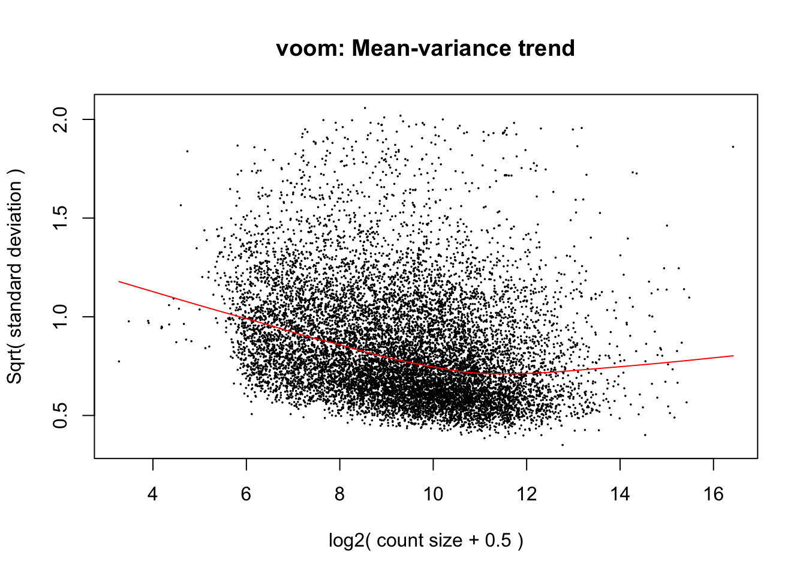
fit.cyclic.norm <- lmFit(cpm.voom.cyclic, design, plot = TRUE, block=samples$Individual, correlation=corfit$consensus)
fit.cyclic.norm <- eBayes(fit.cyclic.norm)
# In the contrast matrix, we have many comparisons for species and tissues individually
# Note: baseline is chimp heart
cm2 <- makeContrasts(HC_HG = Human_heart - Human,
HR_HG = (Human_heart - Rhesus_heart) - (Human - Rhesus),
CR_HG = Rhesus - Rhesus_heart,
levels = design)
# Implement contrasts
contrasts_interactions <- contrasts.fit(fit.cyclic.norm, cm2)
fit1 <- eBayes(contrasts_interactions)
# Pull interactions
top3 <- list(HC_HG =topTable(fit1, coef=1, adjust="BH", number=Inf, sort.by="none"),
HR_HG =topTable(fit1, coef=2, adjust="BH", number=Inf, sort.by="none"),
CR_HG =topTable(fit1, coef=3, adjust="BH", number=Inf, sort.by="none"))
# Determine the number of statistically signficant interactions
HC_HG =topTable(fit1, coef=1, adjust="BH", number=Inf, sort.by="none")
dim(HC_HG[which(HC_HG$adj.P.Val < FDR_level), ]) [1] 140 7HR_HG =topTable(fit1, coef=2, adjust="BH", number=Inf, sort.by="none")
dim(HR_HG[which(HR_HG$adj.P.Val < FDR_level), ]) [1] 610 7CR_HG =topTable(fit1, coef=3, adjust="BH", number=Inf, sort.by="none")
dim(CR_HG[which(CR_HG$adj.P.Val < FDR_level), ]) [1] 422 7Adaptive shrinkage on interactions in all 3 species’ hearts versus all other tissues
# Prepare the data for ASH
tests <- colnames(fit1$coefficients)
tests[1] "HC_HG" "HR_HG" "CR_HG"results <- vector(length = length(tests), mode = "list")
names(results) <- tests
# Get lfsr, lfdr, s value, q value, and a beta_est value.
for (test in tests) {
# Extract limma results
results[[test]] <- get_results(fit1, coef = test)
# Add mutliple testing correction with ASH
output_ash <- run_ash(fit1, coef = test)
results[[test]] <- cbind(results[[test]], sebetahat = output_ash$data$s, lfsr = output_ash$result$lfsr,
lfdr = output_ash$result$lfdr, qvalue = output_ash$result$qvalue,
svalue = output_ash$result$svalue, beta_est = output_ash$result$PosteriorMean, se_est =
output_ash$result$PosteriorSD)
}Due to absence of package REBayes, switching to EM algorithm
Due to absence of package REBayes, switching to EM algorithm
Due to absence of package REBayes, switching to EM algorithm# Save results from analysis with limma and ash.
#saveRDS(results, file.path(data_dir, "results-limma-voom-ash-interactions.rds"))
heart_combined_interactions <- as.data.frame(cbind(results[["HC_HG"]]$svalue,
results[["HR_HG"]]$svalue,
results[["CR_HG"]]$svalue))
dim(heart_combined_interactions)[1] 12184 3colnames(heart_combined_interactions) <- c("HC_HG", "HR_HG", "CR_HG")Interactions in all 3 species’ livers versus all other tissues
# Reassign tissues to be liver versus non-livers
tissue_group <- gsub("kidney", "Grouped", tissue)
tissue_group <- gsub("heart", "Grouped", tissue_group)
tissue_group <- gsub("lung", "Grouped", tissue_group)
# Rename columns of the contrast matrix
## Make the contrast matrix and rename columns of the contrast matrix
design <- model.matrix(~ species*tissue_group + RIN)
# Rename columns of the contrast matrix
colnames(design)[1] <- "Intercept"
colnames(design)[2] <- "Human"
colnames(design)[3] <- "Rhesus"
colnames(design)[4] <- "tissue_livers" # Heart versus non-livers
colnames(design)[5] <- "RIN"
colnames(design)[6] <- "Human_liver"
colnames(design)[7] <- "Rhesus_liver"
# Look at the number of samples in each column
colSums(design) Intercept Human Rhesus tissue_livers RIN
47.0 15.0 16.0 12.0 368.2
Human_liver Rhesus_liver
4.0 4.0 # Run linear model with new design matrix
cpm.voom.cyclic <- voom(dge_in_cutoff, design, normalize.method="cyclicloess")
corfit <- duplicateCorrelation(cpm.voom.cyclic, design, block=samples$Individual)
corfit$consensus <- -0.0912331
#corfit$consensus <- 0.2177817
# Final voom on filtered data
cpm.voom.cyclic <- voom(dge_in_cutoff, design, normalize.method="cyclicloess", plot=TRUE, block=samples$Individual, correlation=corfit$consensus)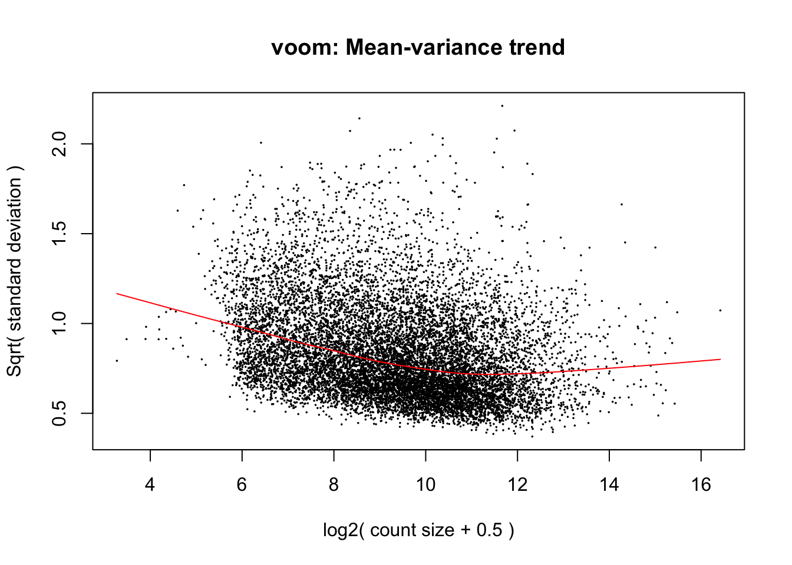
fit.cyclic.norm <- lmFit(cpm.voom.cyclic, design, plot = TRUE, block=samples$Individual, correlation=corfit$consensus)
fit.cyclic.norm <- eBayes(fit.cyclic.norm)
# In the contrast matrix, we have many comparisons for species and tissues individually
# Note: baseline is chimp heart
cm2 <- makeContrasts(HC_HG = Human_liver - Human,
HR_HG = (Human_liver - Rhesus_liver) - (Human - Rhesus),
CR_HG = Rhesus - Rhesus_liver,
levels = design)
# Implement contrasts
contrasts_interactions <- contrasts.fit(fit.cyclic.norm, cm2)
fit1 <- eBayes(contrasts_interactions)
# Pull interactions
top3 <- list(HC_LiG =topTable(fit1, coef=1, adjust="BH", number=Inf, sort.by="none"),
HR_LiG =topTable(fit1, coef=2, adjust="BH", number=Inf, sort.by="none"),
CR_LiG =topTable(fit1, coef=3, adjust="BH", number=Inf, sort.by="none"))
# Determine the number of statistically signficant interactions
HC_LiG =topTable(fit1, coef=1, adjust="BH", number=Inf, sort.by="none")
dim(HC_LiG[which(HC_LiG$adj.P.Val < FDR_level), ]) [1] 103 7HR_LiG =topTable(fit1, coef=2, adjust="BH", number=Inf, sort.by="none")
dim(HR_LiG[which(HR_LiG$adj.P.Val < FDR_level), ]) [1] 515 7CR_LiG =topTable(fit1, coef=3, adjust="BH", number=Inf, sort.by="none")
dim(CR_LiG[which(CR_LiG$adj.P.Val < FDR_level), ]) [1] 349 7Adaptive shrinkage on interactions in all 3 species’ livers versus all other tissues
# Prepare the data for ASH
tests <- colnames(fit1$coefficients)
tests[1] "HC_HG" "HR_HG" "CR_HG"results <- vector(length = length(tests), mode = "list")
names(results) <- tests
# Get lfsr, lfdr, s value, q value, and a beta_est value.
for (test in tests) {
# Extract limma results
results[[test]] <- get_results(fit1, coef = test)
# Add mutliple testing correction with ASH
output_ash <- run_ash(fit1, coef = test)
results[[test]] <- cbind(results[[test]], sebetahat = output_ash$data$s, lfsr = output_ash$result$lfsr,
lfdr = output_ash$result$lfdr, qvalue = output_ash$result$qvalue,
svalue = output_ash$result$svalue, beta_est = output_ash$result$PosteriorMean, se_est =
output_ash$result$PosteriorSD)
}Due to absence of package REBayes, switching to EM algorithm
Due to absence of package REBayes, switching to EM algorithm
Due to absence of package REBayes, switching to EM algorithm# Save results from analysis with limma and ash.
#saveRDS(results, file.path(data_dir, "results-limma-voom-ash-interactions.rds"))
liver_combined_interactions <- as.data.frame(cbind(results[["HC_HG"]]$svalue,
results[["HR_HG"]]$svalue,
results[["CR_HG"]]$svalue))
dim(liver_combined_interactions)[1] 12184 3colnames(liver_combined_interactions) <- c("HC_LiG", "HR_LiG", "CR_LiG")Interactions in all 3 species’ lungs versus all other tissues
# Reassign tissues to be lung versus non-lung
tissue_group <- gsub("kidney", "Grouped", tissue)
tissue_group <- gsub("heart", "Grouped", tissue_group)
tissue_group <- gsub("liver", "Grouped", tissue_group)
## Make the contrast matrix and rename columns of the contrast matrix
design <- model.matrix(~ species*tissue_group + RIN)
# Rename columns of the contrast matrix
colnames(design)[1] <- "Intercept"
colnames(design)[2] <- "Human"
colnames(design)[3] <- "Rhesus"
colnames(design)[4] <- "tissue_lungs" # Heart versus non-livers
colnames(design)[5] <- "RIN"
colnames(design)[6] <- "Human_lung"
colnames(design)[7] <- "Rhesus_lung"
# Look at the number of samples in each column
colSums(design) Intercept Human Rhesus tissue_lungs RIN
47.0 15.0 16.0 12.0 368.2
Human_lung Rhesus_lung
4.0 4.0 # Run linear model with new design matrix
cpm.voom.cyclic <- voom(dge_in_cutoff, design, normalize.method="cyclicloess")
corfit <- duplicateCorrelation(cpm.voom.cyclic, design, block=samples$Individual)
corfit$consensus <- -0.09711687
#corfit$consensus <- 0.2177817
# Final voom on filtered data
cpm.voom.cyclic <- voom(dge_in_cutoff, design, normalize.method="cyclicloess", plot=TRUE, block=samples$Individual, correlation=corfit$consensus)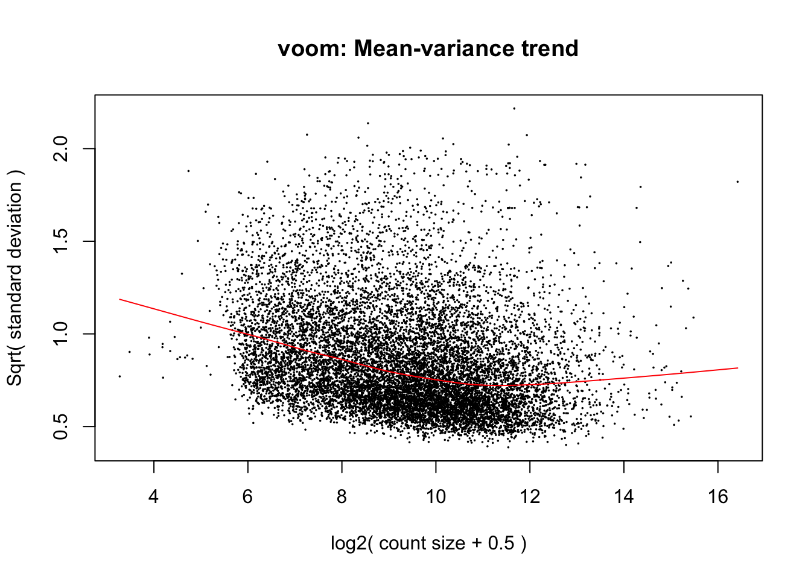
fit.cyclic.norm <- lmFit(cpm.voom.cyclic, design, plot = TRUE, block=samples$Individual, correlation=corfit$consensus)
fit.cyclic.norm <- eBayes(fit.cyclic.norm)
# In the contrast matrix, we have many comparisons for species and tissues individually
# Note: baseline is chimp heart
cm4 <- makeContrasts(HC_HG = Human_lung - Human,
HR_HG = (Human_lung - Rhesus_lung) - (Human - Rhesus),
CR_HG = Rhesus - Rhesus_lung,
levels = design)
# Implement contrasts
contrasts_interactions <- contrasts.fit(fit.cyclic.norm, cm4)
fit1 <- eBayes(contrasts_interactions)
# Pull interactions
top3 <- list(HC_LuG =topTable(fit1, coef=1, adjust="BH", number=Inf, sort.by="none"),
HR_LuG =topTable(fit1, coef=2, adjust="BH", number=Inf, sort.by="none"),
CR_LuG =topTable(fit1, coef=3, adjust="BH", number=Inf, sort.by="none"))
# Determine the number of statistically signficant interactions
HC_LuG =topTable(fit1, coef=1, adjust="BH", number=Inf, sort.by="none")
dim(HC_LuG[which(HC_LuG$adj.P.Val < FDR_level), ]) [1] 98 7HR_LuG =topTable(fit1, coef=2, adjust="BH", number=Inf, sort.by="none")
dim(HR_LuG[which(HR_LuG$adj.P.Val < FDR_level), ]) [1] 480 7CR_LuG =topTable(fit1, coef=3, adjust="BH", number=Inf, sort.by="none")
dim(CR_LuG[which(CR_LuG$adj.P.Val < FDR_level), ]) [1] 642 7Adaptive shrinkage on interactions in all 3 species’ lungs versus all other tissues
# Prepare the data for ASH
tests <- colnames(fit1$coefficients)
tests[1] "HC_HG" "HR_HG" "CR_HG"results <- vector(length = length(tests), mode = "list")
names(results) <- tests
# Get lfsr, lfdr, s value, q value, and a beta_est value.
for (test in tests) {
# Extract limma results
results[[test]] <- get_results(fit1, coef = test)
# Add mutliple testing correction with ASH
output_ash <- run_ash(fit1, coef = test)
results[[test]] <- cbind(results[[test]], sebetahat = output_ash$data$s, lfsr = output_ash$result$lfsr,
lfdr = output_ash$result$lfdr, qvalue = output_ash$result$qvalue,
svalue = output_ash$result$svalue, beta_est = output_ash$result$PosteriorMean, se_est =
output_ash$result$PosteriorSD)
}Due to absence of package REBayes, switching to EM algorithm
Due to absence of package REBayes, switching to EM algorithm
Due to absence of package REBayes, switching to EM algorithm# Save results from analysis with limma and ash.
#saveRDS(results, file.path(data_dir, "results-limma-voom-ash-interactions.rds"))
lung_combined_interactions <- as.data.frame(cbind(results[["HC_HG"]]$svalue,
results[["HR_HG"]]$svalue,
results[["CR_HG"]]$svalue))
dim(lung_combined_interactions)[1] 12184 3colnames(lung_combined_interactions) <- c("HC_LuG", "HR_LuG", "CR_LuG")
#check_lung_combined_interactions <- as.data.frame(cbind(results[["HC_LuG"]]$adj.P.Val, results[["HC_LuG"]]$svalue))
#colnames(check_lung_combined_interactions) <- c("BH-adj P value", "s value")
#dim(check_lung_combined_interactions[which(check_lung_combined_interactions[,1] < 0.01) ,])
#check_lung_combined_interactions[which(check_lung_combined_interactions[,1] < 0.01) ,]
#dim(check_lung_combined_interactions[which(check_lung_combined_interactions[,2] < 0.01) ,])Interactions in all 3 species’ kidneys versus all other tissues
# Reassign tissues to be heart versus non-heart
tissue_group <- gsub("lung", "Grouped", tissue)
tissue_group <- gsub("heart", "Grouped", tissue_group)
tissue_group <- gsub("liver", "Grouped", tissue_group)
design <- model.matrix(~ species*tissue_group + RIN)
## Make the contrast matrix and rename columns of the contrast matrix
# Rename columns of the contrast matrix
colnames(design)[1] <- "Intercept"
colnames(design)[2] <- "Human"
colnames(design)[3] <- "Rhesus"
colnames(design)[4] <- "tissue_kidneys" # Heart versus non-livers
colnames(design)[5] <- "RIN"
colnames(design)[6] <- "Human_kidney"
colnames(design)[7] <- "Rhesus_kidney"
# Implement contrasts
# Look at the number of samples in each column
colSums(design) Intercept Human Rhesus tissue_kidneys RIN
47.0 15.0 16.0 12.0 368.2
Human_kidney Rhesus_kidney
4.0 4.0 # Run linear model with new design matrix
cpm.voom.cyclic <- voom(dge_in_cutoff, design, normalize.method="cyclicloess")
#corfit <- duplicateCorrelation(cpm.voom.cyclic, design, block=samples$Individual)
corfit$consensus <- -0.128052
#corfit$consensus <- 0.2177817
# Final voom on filtered data
cpm.voom.cyclic <- voom(dge_in_cutoff, design, normalize.method="cyclicloess", plot=TRUE, block=samples$Individual, correlation=corfit$consensus)fit.cyclic.norm <- lmFit(cpm.voom.cyclic, design, plot = TRUE, block=samples$Individual, correlation=corfit$consensus)
fit.cyclic.norm <- eBayes(fit.cyclic.norm)
# In the contrast matrix, we have many comparisons for species and tissues individually
# Note: baseline is chimp heart
cm5 <- makeContrasts(HC_HG = Human_kidney - Human,
HR_HG = (Human_kidney - Rhesus_kidney) - (Human - Rhesus),
CR_HG = Rhesus - Rhesus_kidney,
levels = design)
# Implement contrasts
contrasts_interactions <- contrasts.fit(fit.cyclic.norm, cm5)
fit1 <- eBayes(contrasts_interactions)
# Pull interactions
top3 <- list(HC_KG =topTable(fit1, coef=1, adjust="BH", number=Inf, sort.by="none"),
HR_KG =topTable(fit1, coef=2, adjust="BH", number=Inf, sort.by="none"),
CR_KG =topTable(fit1, coef=3, adjust="BH", number=Inf, sort.by="none"))
# Determine the number of statistically signficant interactions
HC_KG =topTable(fit1, coef=1, adjust="BH", number=Inf, sort.by="none")
dim(HC_KG[which(HC_KG$adj.P.Val < FDR_level), ]) [1] 98 7HR_KG =topTable(fit1, coef=2, adjust="BH", number=Inf, sort.by="none")
dim(HR_KG[which(HR_KG$adj.P.Val < FDR_level), ]) [1] 282 7CR_KG =topTable(fit1, coef=3, adjust="BH", number=Inf, sort.by="none")
dim(CR_KG[which(CR_KG$adj.P.Val < FDR_level), ]) [1] 255 7Tissue-specific interactions (FDR)
# Set FDR level
FDR_level <- 0.01
# Interactions between 3 species hearts and other tissues
intersect(intersect(intersect(intersect(intersect(intersect(intersect(intersect(intersect(intersect(intersect(rownames(HC_HG[which(HC_HG$adj.P.Val < FDR_level), ]), rownames(HR_HG[which(HR_HG$adj.P.Val < FDR_level), ])), rownames(CR_HG[which(CR_HG$adj.P.Val < FDR_level), ])),
rownames(HC_LiG[which(HC_LiG$adj.P.Val > FDR_level), ])), rownames(HR_LiG[which(HR_LiG$adj.P.Val > FDR_level), ])), rownames(CR_HG[which(CR_HG$adj.P.Val > FDR_level), ])),
rownames(HC_LuG[which(HC_LuG$adj.P.Val > FDR_level), ])), rownames(HR_LuG[which(HR_LuG$adj.P.Val > FDR_level), ])), rownames(CR_LuG[which(CR_LuG$adj.P.Val > FDR_level), ])),
rownames(HC_KG[which(HC_KG$adj.P.Val > FDR_level), ])), rownames(HR_KG[which(HR_KG$adj.P.Val > FDR_level), ])), rownames(CR_KG[which(CR_KG$adj.P.Val > FDR_level), ]))character(0)# Interactions between 3 species livers and other tissues
intersect(intersect(intersect(intersect(intersect(intersect(intersect(intersect(intersect(intersect(intersect(rownames(HC_HG[which(HC_HG$adj.P.Val > FDR_level), ]), rownames(HR_HG[which(HR_HG$adj.P.Val > FDR_level), ])), rownames(CR_HG[which(CR_HG$adj.P.Val > FDR_level), ])),
rownames(HC_LiG[which(HC_LiG$adj.P.Val < FDR_level), ])), rownames(HR_LiG[which(HR_LiG$adj.P.Val < FDR_level), ])), rownames(CR_HG[which(CR_HG$adj.P.Val < FDR_level), ])),
rownames(HC_LuG[which(HC_LuG$adj.P.Val > FDR_level), ])), rownames(HR_LuG[which(HR_LuG$adj.P.Val > FDR_level), ])), rownames(CR_LuG[which(CR_LuG$adj.P.Val > FDR_level), ])),
rownames(HC_KG[which(HC_KG$adj.P.Val > FDR_level), ])), rownames(HR_KG[which(HR_KG$adj.P.Val > FDR_level), ])), rownames(CR_KG[which(CR_KG$adj.P.Val > FDR_level), ]))character(0)# Interactions between 3 species lungs and other tissues
intersect(intersect(intersect(intersect(intersect(intersect(intersect(intersect(intersect(intersect(intersect(rownames(HC_HG[which(HC_HG$adj.P.Val > FDR_level), ]), rownames(HR_HG[which(HR_HG$adj.P.Val > FDR_level), ])), rownames(CR_HG[which(CR_HG$adj.P.Val > FDR_level), ])),
rownames(HC_LiG[which(HC_LiG$adj.P.Val > FDR_level), ])), rownames(HR_LiG[which(HR_LiG$adj.P.Val > FDR_level), ])), rownames(CR_HG[which(CR_HG$adj.P.Val > FDR_level), ])),
rownames(HC_LuG[which(HC_LuG$adj.P.Val < FDR_level), ])), rownames(HR_LuG[which(HR_LuG$adj.P.Val < FDR_level), ])), rownames(CR_LuG[which(CR_LuG$adj.P.Val < FDR_level), ])),
rownames(HC_KG[which(HC_KG$adj.P.Val > FDR_level), ])), rownames(HR_KG[which(HR_KG$adj.P.Val > FDR_level), ])), rownames(CR_KG[which(CR_KG$adj.P.Val > FDR_level), ]))[1] "ENSG00000099326"# Interactions between 3 species kidneus and other tissues
intersect(intersect(intersect(intersect(intersect(intersect(intersect(intersect(intersect(intersect(intersect(rownames(HC_HG[which(HC_HG$adj.P.Val > FDR_level), ]), rownames(HR_HG[which(HR_HG$adj.P.Val > FDR_level), ])), rownames(CR_HG[which(CR_HG$adj.P.Val > FDR_level), ])),
rownames(HC_LiG[which(HC_LiG$adj.P.Val > FDR_level), ])), rownames(HR_LiG[which(HR_LiG$adj.P.Val > FDR_level), ])), rownames(CR_HG[which(CR_HG$adj.P.Val > FDR_level), ])),
rownames(HC_LuG[which(HC_LuG$adj.P.Val > FDR_level), ])), rownames(HR_LuG[which(HR_LuG$adj.P.Val > FDR_level), ])), rownames(CR_LuG[which(CR_LuG$adj.P.Val > FDR_level), ])),
rownames(HC_KG[which(HC_KG$adj.P.Val < FDR_level), ])), rownames(HR_KG[which(HR_KG$adj.P.Val < FDR_level), ])), rownames(CR_KG[which(CR_KG$adj.P.Val < FDR_level), ]))[1] "ENSG00000121236" "ENSG00000258232"# Interactions between 3 species hearts and other tissues (Human/Chimp versus Rhesus)
intersect(intersect(intersect(intersect(intersect(intersect(intersect(intersect(intersect(intersect(intersect(rownames(HC_HG[which(HC_HG$adj.P.Val > FDR_level), ]), rownames(HR_HG[which(HR_HG$adj.P.Val < FDR_level), ])), rownames(CR_HG[which(CR_HG$adj.P.Val < FDR_level), ])),
rownames(HC_LiG[which(HC_LiG$adj.P.Val > FDR_level), ])), rownames(HR_LiG[which(HR_LiG$adj.P.Val > FDR_level), ])), rownames(CR_HG[which(CR_HG$adj.P.Val > FDR_level), ])),
rownames(HC_LuG[which(HC_LuG$adj.P.Val > FDR_level), ])), rownames(HR_LuG[which(HR_LuG$adj.P.Val > FDR_level), ])), rownames(CR_LuG[which(CR_LuG$adj.P.Val > FDR_level), ])),
rownames(HC_KG[which(HC_KG$adj.P.Val > FDR_level), ])), rownames(HR_KG[which(HR_KG$adj.P.Val > FDR_level), ])), rownames(CR_KG[which(CR_KG$adj.P.Val > FDR_level), ]))character(0)# Interactions between 3 species livers and other tissues (Human/Chimp versus Rhesus)
intersect(intersect(intersect(intersect(intersect(intersect(intersect(intersect(intersect(intersect(intersect(rownames(HC_HG[which(HC_HG$adj.P.Val > FDR_level), ]), rownames(HR_HG[which(HR_HG$adj.P.Val > FDR_level), ])), rownames(CR_HG[which(CR_HG$adj.P.Val > FDR_level), ])),
rownames(HC_LiG[which(HC_LiG$adj.P.Val > FDR_level), ])), rownames(HR_LiG[which(HR_LiG$adj.P.Val < FDR_level), ])), rownames(CR_HG[which(CR_HG$adj.P.Val < FDR_level), ])),
rownames(HC_LuG[which(HC_LuG$adj.P.Val > FDR_level), ])), rownames(HR_LuG[which(HR_LuG$adj.P.Val > FDR_level), ])), rownames(CR_LuG[which(CR_LuG$adj.P.Val > FDR_level), ])),
rownames(HC_KG[which(HC_KG$adj.P.Val > FDR_level), ])), rownames(HR_KG[which(HR_KG$adj.P.Val > FDR_level), ])), rownames(CR_KG[which(CR_KG$adj.P.Val > FDR_level), ]))character(0)# Interactions between 3 species lungs and other tissues (Human/Chimp versus Rhesus)
intersect(intersect(intersect(intersect(intersect(intersect(intersect(intersect(intersect(intersect(intersect(rownames(HC_HG[which(HC_HG$adj.P.Val > FDR_level), ]), rownames(HR_HG[which(HR_HG$adj.P.Val > FDR_level), ])), rownames(CR_HG[which(CR_HG$adj.P.Val > FDR_level), ])),
rownames(HC_LiG[which(HC_LiG$adj.P.Val > FDR_level), ])), rownames(HR_LiG[which(HR_LiG$adj.P.Val > FDR_level), ])), rownames(CR_HG[which(CR_HG$adj.P.Val > FDR_level), ])),
rownames(HC_LuG[which(HC_LuG$adj.P.Val > FDR_level), ])), rownames(HR_LuG[which(HR_LuG$adj.P.Val < FDR_level), ])), rownames(CR_LuG[which(CR_LuG$adj.P.Val < FDR_level), ])),
rownames(HC_KG[which(HC_KG$adj.P.Val > FDR_level), ])), rownames(HR_KG[which(HR_KG$adj.P.Val > FDR_level), ])), rownames(CR_KG[which(CR_KG$adj.P.Val > FDR_level), ])) [1] "ENSG00000005469" "ENSG00000008516" "ENSG00000011422"
[4] "ENSG00000013503" "ENSG00000042445" "ENSG00000048540"
[7] "ENSG00000064961" "ENSG00000071859" "ENSG00000075303"
[10] "ENSG00000076924" "ENSG00000078124" "ENSG00000079616"
[13] "ENSG00000082146" "ENSG00000083838" "ENSG00000085514"
[16] "ENSG00000085831" "ENSG00000087206" "ENSG00000088826"
[19] "ENSG00000089127" "ENSG00000092036" "ENSG00000092529"
[22] "ENSG00000093072" "ENSG00000100297" "ENSG00000100359"
[25] "ENSG00000100376" "ENSG00000101224" "ENSG00000102034"
[28] "ENSG00000104518" "ENSG00000105287" "ENSG00000105819"
[31] "ENSG00000107672" "ENSG00000107949" "ENSG00000108064"
[34] "ENSG00000108219" "ENSG00000108433" "ENSG00000108551"
[37] "ENSG00000108587" "ENSG00000108797" "ENSG00000110274"
[40] "ENSG00000111110" "ENSG00000113391" "ENSG00000114270"
[43] "ENSG00000116898" "ENSG00000117245" "ENSG00000117360"
[46] "ENSG00000119801" "ENSG00000120280" "ENSG00000120333"
[49] "ENSG00000120992" "ENSG00000122335" "ENSG00000122386"
[52] "ENSG00000124767" "ENSG00000125846" "ENSG00000125966"
[55] "ENSG00000127054" "ENSG00000128928" "ENSG00000129219"
[58] "ENSG00000129317" "ENSG00000129933" "ENSG00000130731"
[61] "ENSG00000132017" "ENSG00000132530" "ENSG00000132591"
[64] "ENSG00000132640" "ENSG00000132781" "ENSG00000133789"
[67] "ENSG00000133983" "ENSG00000134627" "ENSG00000135249"
[70] "ENSG00000136710" "ENSG00000136811" "ENSG00000137185"
[73] "ENSG00000137936" "ENSG00000138095" "ENSG00000138378"
[76] "ENSG00000139117" "ENSG00000139132" "ENSG00000139193"
[79] "ENSG00000139874" "ENSG00000140043" "ENSG00000143067"
[82] "ENSG00000143554" "ENSG00000143753" "ENSG00000144362"
[85] "ENSG00000144857" "ENSG00000146477" "ENSG00000149489"
[88] "ENSG00000149499" "ENSG00000150977" "ENSG00000151893"
[91] "ENSG00000152219" "ENSG00000154146" "ENSG00000154814"
[94] "ENSG00000155393" "ENSG00000155926" "ENSG00000156787"
[97] "ENSG00000158423" "ENSG00000159128" "ENSG00000159314"
[100] "ENSG00000159445" "ENSG00000159674" "ENSG00000160401"
[103] "ENSG00000160767" "ENSG00000160783" "ENSG00000160972"
[106] "ENSG00000161526" "ENSG00000162591" "ENSG00000162650"
[109] "ENSG00000162714" "ENSG00000162878" "ENSG00000164054"
[112] "ENSG00000164088" "ENSG00000164674" "ENSG00000165792"
[115] "ENSG00000166508" "ENSG00000166833" "ENSG00000166839"
[118] "ENSG00000167077" "ENSG00000167720" "ENSG00000168589"
[121] "ENSG00000169992" "ENSG00000170456" "ENSG00000170906"
[124] "ENSG00000171703" "ENSG00000172264" "ENSG00000172660"
[127] "ENSG00000172878" "ENSG00000174175" "ENSG00000174516"
[130] "ENSG00000175130" "ENSG00000175264" "ENSG00000175581"
[133] "ENSG00000177084" "ENSG00000178038" "ENSG00000182141"
[136] "ENSG00000184083" "ENSG00000184857" "ENSG00000185187"
[139] "ENSG00000185238" "ENSG00000188647" "ENSG00000188786"
[142] "ENSG00000188938" "ENSG00000196526" "ENSG00000198015"
[145] "ENSG00000198843" "ENSG00000198862" "ENSG00000205707"
[148] "ENSG00000206538" "ENSG00000213516" "ENSG00000213903"
[151] "ENSG00000215039" "ENSG00000222046" "ENSG00000223609"
[154] "ENSG00000227671" "ENSG00000230055" "ENSG00000237883"
[157] "ENSG00000241852" "ENSG00000242500" "ENSG00000243056"
[160] "ENSG00000245573" "ENSG00000249124" "ENSG00000253368"
[163] "ENSG00000253982" "ENSG00000254445" "ENSG00000258210"
[166] "ENSG00000258461" "ENSG00000258644" "ENSG00000258653"# Interactions between 3 species kidneys and other tissues
intersect(intersect(intersect(intersect(intersect(intersect(intersect(intersect(intersect(intersect(intersect(rownames(HC_HG[which(HC_HG$adj.P.Val > FDR_level), ]), rownames(HR_HG[which(HR_HG$adj.P.Val > FDR_level), ])), rownames(CR_HG[which(CR_HG$adj.P.Val > FDR_level), ])),
rownames(HC_LiG[which(HC_LiG$adj.P.Val > FDR_level), ])), rownames(HR_LiG[which(HR_LiG$adj.P.Val > FDR_level), ])), rownames(CR_HG[which(CR_HG$adj.P.Val > FDR_level), ])),
rownames(HC_LuG[which(HC_LuG$adj.P.Val > FDR_level), ])), rownames(HR_LuG[which(HR_LuG$adj.P.Val > FDR_level), ])), rownames(CR_LuG[which(CR_LuG$adj.P.Val > FDR_level), ])),
rownames(HC_KG[which(HC_KG$adj.P.Val > FDR_level), ])), rownames(HR_KG[which(HR_KG$adj.P.Val < FDR_level), ])), rownames(CR_KG[which(CR_KG$adj.P.Val < FDR_level), ])) [1] "ENSG00000066923" "ENSG00000070371" "ENSG00000074356"
[4] "ENSG00000095066" "ENSG00000100170" "ENSG00000100490"
[7] "ENSG00000100612" "ENSG00000102595" "ENSG00000105825"
[10] "ENSG00000105928" "ENSG00000106123" "ENSG00000107611"
[13] "ENSG00000110079" "ENSG00000110675" "ENSG00000112667"
[16] "ENSG00000115556" "ENSG00000120594" "ENSG00000122121"
[19] "ENSG00000123352" "ENSG00000125895" "ENSG00000126562"
[22] "ENSG00000130558" "ENSG00000130997" "ENSG00000133059"
[25] "ENSG00000133250" "ENSG00000137960" "ENSG00000138134"
[28] "ENSG00000139289" "ENSG00000143801" "ENSG00000144136"
[31] "ENSG00000148175" "ENSG00000150672" "ENSG00000151491"
[34] "ENSG00000154265" "ENSG00000161574" "ENSG00000162241"
[37] "ENSG00000166860" "ENSG00000167778" "ENSG00000168395"
[40] "ENSG00000172296" "ENSG00000172331" "ENSG00000173567"
[43] "ENSG00000174799" "ENSG00000176046" "ENSG00000177082"
[46] "ENSG00000181396" "ENSG00000182983" "ENSG00000185015"
[49] "ENSG00000187231" "ENSG00000187741" "ENSG00000196456"
[52] "ENSG00000205517" "ENSG00000213494" "ENSG00000214128"
[55] "ENSG00000239521" "ENSG00000254528" "ENSG00000257453"Adaptive shrinkage on interactions in all 3 species’ kidneys versus all other tissues
# Prepare the data for ASH
tests <- colnames(fit1$coefficients)
tests[1] "HC_HG" "HR_HG" "CR_HG"results <- vector(length = length(tests), mode = "list")
names(results) <- tests
# Get lfsr, lfdr, s value, q value, and a beta_est value.
for (test in tests) {
# Extract limma results
results[[test]] <- get_results(fit1, coef = test)
# Add mutliple testing correction with ASH
output_ash <- run_ash(fit1, coef = test)
results[[test]] <- cbind(results[[test]], sebetahat = output_ash$data$s, lfsr = output_ash$result$lfsr,
lfdr = output_ash$result$lfdr, qvalue = output_ash$result$qvalue,
svalue = output_ash$result$svalue, beta_est = output_ash$result$PosteriorMean, se_est =
output_ash$result$PosteriorSD)
}Due to absence of package REBayes, switching to EM algorithm
Due to absence of package REBayes, switching to EM algorithm
Due to absence of package REBayes, switching to EM algorithm# Save results from analysis with limma and ash.
#saveRDS(results, file.path(data_dir, "results-limma-voom-ash-interactions.rds"))
kidney_combined_interactions <- as.data.frame(cbind(results[["HC_HG"]]$svalue,
results[["HR_HG"]]$svalue,
results[["CR_HG"]]$svalue))
dim(kidney_combined_interactions)[1] 12184 3colnames(kidney_combined_interactions) <- c("HC_KG", "HR_KG", "CR_KG")Number of interactions using FSR
# Heart
# Human versus Chimp
dim(heart_combined_interactions[which(heart_combined_interactions[,1] < FSR_level), ]) [1] 203 3# Human versus Rhesus
dim(heart_combined_interactions[which(heart_combined_interactions[,2] < FSR_level), ]) [1] 1165 3# Chimp versus Rhesus
dim(heart_combined_interactions[which(heart_combined_interactions[,3] < FSR_level), ]) [1] 705 3# Liver
# Human versus Chimp
dim(liver_combined_interactions[which(liver_combined_interactions[,1] < FSR_level), ]) [1] 107 3# Human versus Rhesus
dim(liver_combined_interactions[which(liver_combined_interactions[,2] < FSR_level), ]) [1] 910 3# Chimp versus Rhesus
dim(liver_combined_interactions[which(liver_combined_interactions[,3] < FSR_level), ]) [1] 547 3# Lung
# Human versus Chimp
dim(lung_combined_interactions[which(lung_combined_interactions[,1] < FSR_level), ]) [1] 113 3# Human versus Rhesus
dim(lung_combined_interactions[which(lung_combined_interactions[,2] < FSR_level), ]) [1] 1049 3# Chimp versus Rhesus
dim(lung_combined_interactions[which(lung_combined_interactions[,3] < FSR_level), ]) [1] 994 3# Kidney
# Human versus Chimp
dim(kidney_combined_interactions[which(kidney_combined_interactions[,1] < FSR_level), ]) [1] 113 3# Human versus Rhesus
dim(kidney_combined_interactions[which(kidney_combined_interactions[,2] < FSR_level), ]) [1] 470 3# Chimp versus Rhesus
dim(kidney_combined_interactions[which(kidney_combined_interactions[,3] < FSR_level), ]) [1] 361 3# Combine the svalue from interactions
three_species_all_tissue_interactions <- cbind(heart_combined_interactions, liver_combined_interactions, lung_combined_interactions, kidney_combined_interactions)
rownames(three_species_all_tissue_interactions) <- rownames(cpm.voom.cyclic$E)
dim(three_species_all_tissue_interactions)[1] 12184 12# Set FDR
FDR_level <- 0.01
FSR_level <- 0.01
# Interactions between 3 species hearts and other tissues
nrow(three_species_all_tissue_interactions[which(three_species_all_tissue_interactions[,1] < FSR_level & three_species_all_tissue_interactions[,2] < FSR_level & three_species_all_tissue_interactions[,3] < FSR_level & three_species_all_tissue_interactions[,4] > FSR_level & three_species_all_tissue_interactions[,5] > FSR_level & three_species_all_tissue_interactions[,6] > FSR_level & three_species_all_tissue_interactions[,7] > FSR_level & three_species_all_tissue_interactions[,8] > FSR_level & three_species_all_tissue_interactions[,9] > FSR_level & three_species_all_tissue_interactions[,10] > FSR_level & three_species_all_tissue_interactions[,11] > FSR_level & three_species_all_tissue_interactions[,12] > FSR_level), ])[1] 5exp <- t(as.data.frame(cpm_12184[grepl("ENSG00000182923", rownames(cpm_12184)), ]))
make_exp_df <- as.data.frame(cbind(exp, species, tissue))
make_exp_df$species <- as.factor(make_exp_df$species)
levels(make_exp_df$species) <- c("Chimpanzee", "Human", "Rhesus")
colnames(make_exp_df) <- c("CPM", "Species", "Tissue")
ggplot(make_exp_df, aes(x=as.factor(Tissue), y=CPM, fill=as.factor(Tissue))) + geom_boxplot() + facet_wrap(~Species) + xlab("Tissue") + ylab("Normalized Expression") + scale_x_discrete(labels=c("Heart","Kidney","Liver", "Lung")) + bjp + theme(legend.position="none")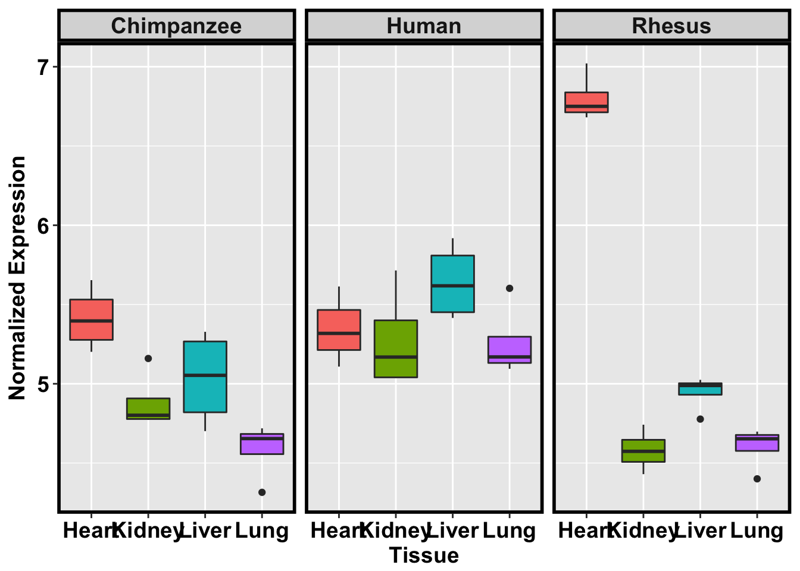
# Interactions between 3 species livers and other tissues
nrow(three_species_all_tissue_interactions[which(three_species_all_tissue_interactions[,1] > FSR_level & three_species_all_tissue_interactions[,2] > FSR_level & three_species_all_tissue_interactions[,3] > FSR_level & three_species_all_tissue_interactions[,4] < FSR_level & three_species_all_tissue_interactions[,5] < FSR_level & three_species_all_tissue_interactions[,6] < FSR_level & three_species_all_tissue_interactions[,7] > FSR_level & three_species_all_tissue_interactions[,8] > FSR_level & three_species_all_tissue_interactions[,9] > FSR_level & three_species_all_tissue_interactions[,10] > FSR_level & three_species_all_tissue_interactions[,11] > FSR_level & three_species_all_tissue_interactions[,12] > FSR_level), ])[1] 1exp <- t(as.data.frame(cpm_12184[grepl("ENSG00000183077", rownames(cpm_12184)), ]))
make_exp_df <- as.data.frame(cbind(exp, species, tissue))
make_exp_df$species <- as.factor(make_exp_df$species)
levels(make_exp_df$species) <- c("Chimpanzee", "Human", "Rhesus")
colnames(make_exp_df) <- c("CPM", "Species", "Tissue")
ggplot(make_exp_df, aes(x=as.factor(Tissue), y=CPM, fill=as.factor(Tissue))) + geom_boxplot() + facet_wrap(~Species) + xlab("Tissue") + ylab("Normalized Expression") + scale_x_discrete(labels=c("Heart","Kidney","Liver", "Lung")) + bjp + theme(legend.position="none")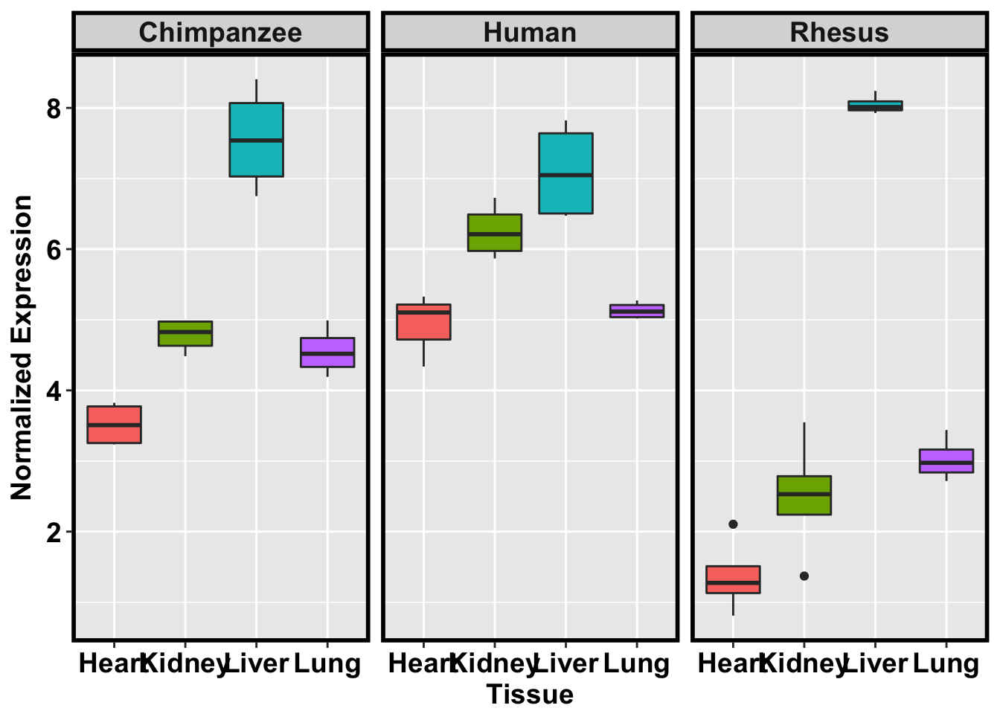
# Interactions between 3 species lungs and other tissues
nrow(three_species_all_tissue_interactions[which(three_species_all_tissue_interactions[,1] > FSR_level & three_species_all_tissue_interactions[,2] > FSR_level & three_species_all_tissue_interactions[,3] > FSR_level & three_species_all_tissue_interactions[,4] > FSR_level & three_species_all_tissue_interactions[,5] > FSR_level & three_species_all_tissue_interactions[,6] > FSR_level & three_species_all_tissue_interactions[,7] < FSR_level & three_species_all_tissue_interactions[,8] < FSR_level & three_species_all_tissue_interactions[,9] < FSR_level & three_species_all_tissue_interactions[,10] > FSR_level & three_species_all_tissue_interactions[,11] > FSR_level & three_species_all_tissue_interactions[,12] > FSR_level), ])[1] 4# Interactions between 3 species kidneys and other tissues
nrow(three_species_all_tissue_interactions[which(three_species_all_tissue_interactions[,1] > FSR_level & three_species_all_tissue_interactions[,2] > FSR_level & three_species_all_tissue_interactions[,3] > FSR_level & three_species_all_tissue_interactions[,4] > FSR_level & three_species_all_tissue_interactions[,5] > FSR_level & three_species_all_tissue_interactions[,6] > FSR_level & three_species_all_tissue_interactions[,7] > FSR_level & three_species_all_tissue_interactions[,8] > FSR_level & three_species_all_tissue_interactions[,9] > FSR_level & three_species_all_tissue_interactions[,10] < FSR_level & three_species_all_tissue_interactions[,11] < FSR_level & three_species_all_tissue_interactions[,12] < FSR_level), ])[1] 1# Interactions between 3 species hearts and other tissues (Human/Chimp versus Rhesus)
nrow(three_species_all_tissue_interactions[which(three_species_all_tissue_interactions[,1] > FSR_level & three_species_all_tissue_interactions[,2] < FSR_level & three_species_all_tissue_interactions[,3] < FSR_level & three_species_all_tissue_interactions[,4] > FSR_level & three_species_all_tissue_interactions[,5] > FSR_level & three_species_all_tissue_interactions[,6] > FSR_level & three_species_all_tissue_interactions[,7] > FSR_level & three_species_all_tissue_interactions[,8] > FSR_level & three_species_all_tissue_interactions[,9] > FSR_level & three_species_all_tissue_interactions[,10] > FSR_level & three_species_all_tissue_interactions[,11] > FSR_level & three_species_all_tissue_interactions[,12] > FSR_level), ])[1] 251exp <- t(as.data.frame(cpm_12184[grepl("ENSG00000004487", rownames(cpm_12184)), ]))
make_exp_df <- as.data.frame(cbind(exp, species, tissue))
make_exp_df$species <- as.factor(make_exp_df$species)
levels(make_exp_df$species) <- c("Chimpanzee", "Human", "Rhesus")
colnames(make_exp_df) <- c("CPM", "Species", "Tissue")
ggplot(make_exp_df, aes(x=as.factor(Tissue), y=CPM, fill=as.factor(Tissue))) + geom_boxplot() + facet_wrap(~Species) + xlab("Tissue") + ylab("Normalized Expression") + scale_x_discrete(labels=c("Heart","Kidney","Liver", "Lung")) + bjp + theme(legend.position="none")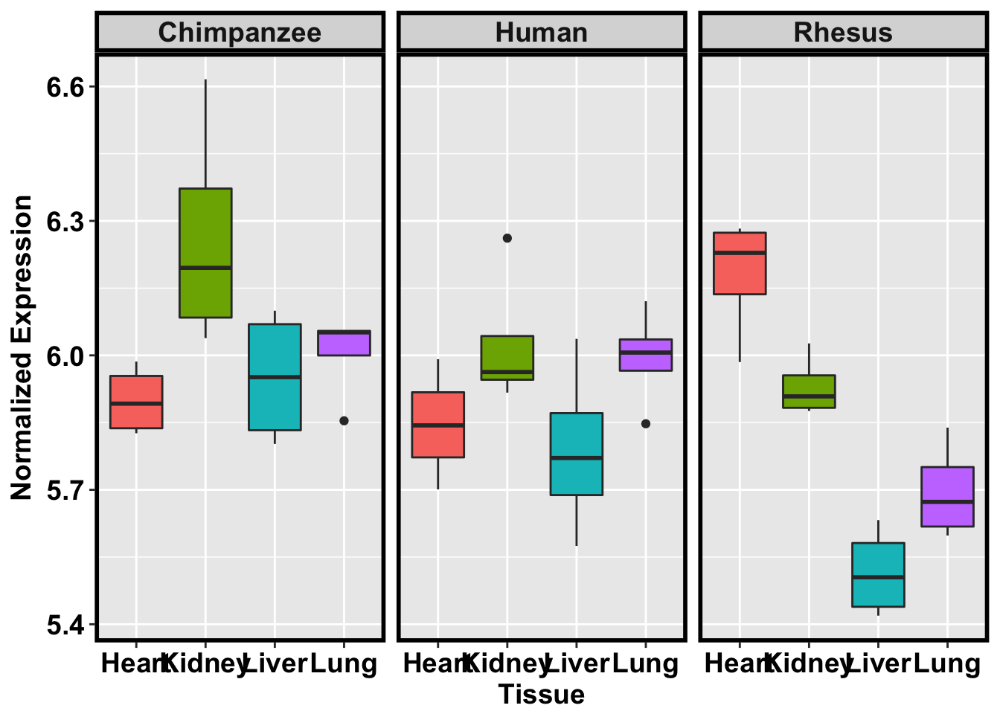
# Interactions between 3 species livers and other tissues (Human/Chimp versus Rhesus)
nrow(three_species_all_tissue_interactions[which(three_species_all_tissue_interactions[,1] > FSR_level & three_species_all_tissue_interactions[,2] > FSR_level & three_species_all_tissue_interactions[,3] > FSR_level & three_species_all_tissue_interactions[,4] > FSR_level & three_species_all_tissue_interactions[,5] < FSR_level & three_species_all_tissue_interactions[,6] < FSR_level & three_species_all_tissue_interactions[,7] > FSR_level & three_species_all_tissue_interactions[,8] > FSR_level & three_species_all_tissue_interactions[,9] > FSR_level & three_species_all_tissue_interactions[,10] > FSR_level & three_species_all_tissue_interactions[,11] > FSR_level & three_species_all_tissue_interactions[,12] > FSR_level), ])[1] 182# Interactions between 3 species lungs and other tissues (Human/Chimp versus Rhesus)
nrow(three_species_all_tissue_interactions[which(three_species_all_tissue_interactions[,1] > FSR_level & three_species_all_tissue_interactions[,2] > FSR_level & three_species_all_tissue_interactions[,3] > FSR_level & three_species_all_tissue_interactions[,4] > FSR_level & three_species_all_tissue_interactions[,5] > FSR_level & three_species_all_tissue_interactions[,6] > FSR_level & three_species_all_tissue_interactions[,7] > FSR_level & three_species_all_tissue_interactions[,8] < FSR_level & three_species_all_tissue_interactions[,9] < FSR_level & three_species_all_tissue_interactions[,10] > FSR_level & three_species_all_tissue_interactions[,11] > FSR_level & three_species_all_tissue_interactions[,12] > FSR_level), ])[1] 291# Interactions between 3 species kidneys and other tissues (Human/Chimp versus Rhesus)
nrow(three_species_all_tissue_interactions[which(three_species_all_tissue_interactions[,1] > FSR_level & three_species_all_tissue_interactions[,2] > FSR_level & three_species_all_tissue_interactions[,3] > FSR_level & three_species_all_tissue_interactions[,4] > FSR_level & three_species_all_tissue_interactions[,5] > FSR_level & three_species_all_tissue_interactions[,6] > FSR_level & three_species_all_tissue_interactions[,7] > FSR_level & three_species_all_tissue_interactions[,8] > FSR_level & three_species_all_tissue_interactions[,9] > FSR_level & three_species_all_tissue_interactions[,10] > FSR_level & three_species_all_tissue_interactions[,11] < FSR_level & three_species_all_tissue_interactions[,12] < FSR_level), ])[1] 78Combining humans and chimps to have a Great Ape versus Rhesus tissues set of interactions
Hearts
# Reassign species to be GA versus not GA
GA_species <- gsub("Chimp", "GA", species)
GA_species <- gsub("Human", "GA", GA_species)
# Reassign tissues to be heart versus non-heart
tissue_group <- gsub("kidney", "Grouped", tissue)
tissue_group <- gsub("liver", "Grouped", tissue_group)
tissue_group <- gsub("lung", "Grouped", tissue_group)
## Make the contrast matrix and rename columns of the contrast matrix
design <- model.matrix(~ GA_species*tissue_group + RIN)
# Rename columns of the contrast matrix
colnames(design)[1] <- "Intercept"
colnames(design)[2] <- "Rhesus"
colnames(design)[3] <- "Heart"
colnames(design)[4] <- "RIN"
colnames(design)[5] <- "Rhesus_heart"
# Look at the number of samples in each column
colSums(design) Intercept Rhesus Heart RIN Rhesus_heart
47.0 16.0 11.0 368.2 4.0 cpm.voom.cyclic <- voom(dge_in_cutoff, design, normalize.method="cyclicloess")
corfit <- duplicateCorrelation(cpm.voom.cyclic, design, block=samples$Individual)
corfit$consensus <- -0.02032154
#corfit$consensus <- 0.2177817
# Final voom on filtered data
cpm.voom.cyclic <- voom(dge_in_cutoff, design, normalize.method="cyclicloess", plot=TRUE, block=samples$Individual, correlation=corfit$consensus)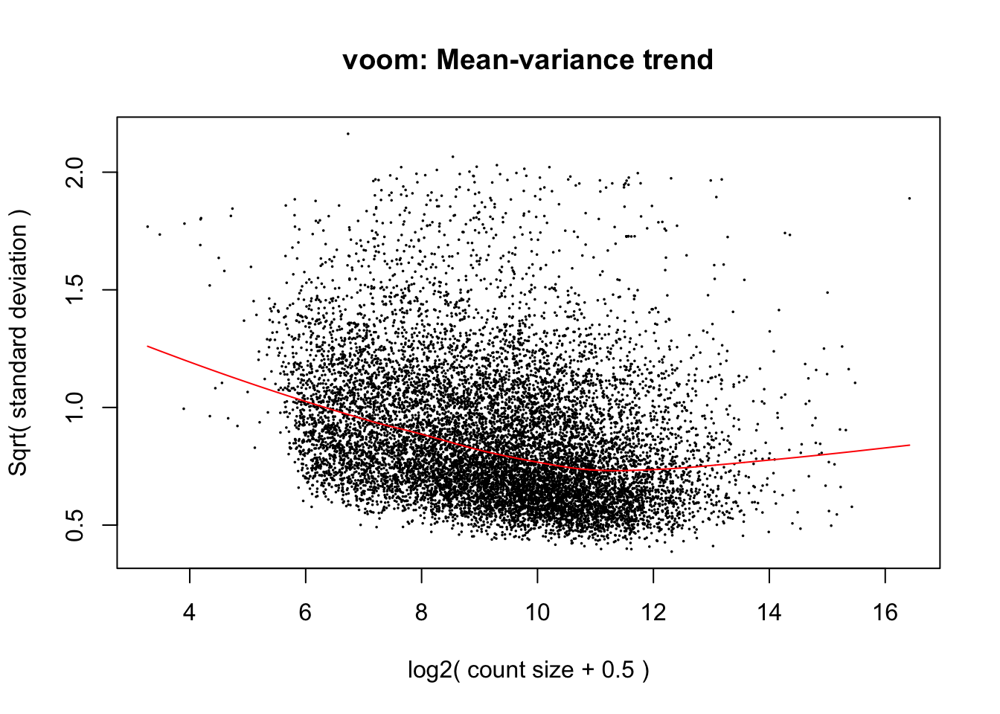
# Run linear model with new design matrix
fit.cyclic.norm <- lmFit(cpm.voom.cyclic, design, plot = TRUE, block=samples$Individual, correlation=corfit$consensus)
fit.cyclic.norm <- eBayes(fit.cyclic.norm)
# Determine the number of statistically signficant interactions
GA_HG =topTable(fit.cyclic.norm, coef=5, adjust="BH", number=Inf, sort.by="none")
dim(GA_HG[which(GA_HG$adj.P.Val < FDR_level), ]) [1] 233 7exp <- t(as.data.frame(cpm_12184[grepl("ENSG00000008282", rownames(cpm_12184)), ]))
make_exp_df <- as.data.frame(cbind(exp, species, tissue), stringsAsFactors = F)
make_exp_df[,1] <- as.numeric(make_exp_df[,1])
#levels(make_exp_df$Species) <- c("Chimpanzee", "Human", "Rhesus")
colnames(make_exp_df) <- c("Normalized Gene Expression", "Species", "Tissue")
ggplot(make_exp_df, aes(x=as.factor(Tissue), y=make_exp_df[,1], fill=as.factor(Tissue))) + geom_boxplot() + facet_wrap(~make_exp_df[,2]) + xlab("Tissue") + ylab("Normalized Gene Expression") + scale_x_discrete(labels=c("Heart","Kidney","Liver", "Lung")) + bjp + theme(legend.position="none") + ggtitle("SYPL (ENSG00000008282)") 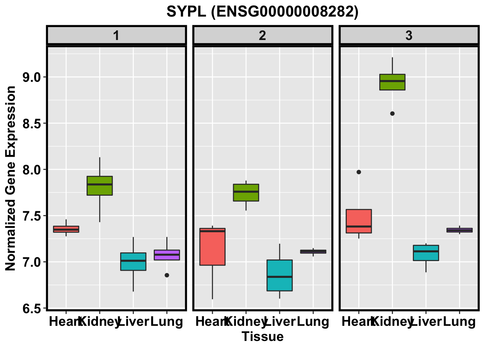
# Extract limma results
results[[test]] <- get_results(fit.cyclic.norm, coef = 5)
# Add mutliple testing correction with ASH
output_ash <- run_ash(fit.cyclic.norm, coef = 5)Due to absence of package REBayes, switching to EM algorithm results[[test]] <- cbind(results[[test]], sebetahat = output_ash$data$s, lfsr = output_ash$result$lfsr,
lfdr = output_ash$result$lfdr, qvalue = output_ash$result$qvalue,
svalue = output_ash$result$svalue, beta_est = output_ash$result$PosteriorMean, se_est =
output_ash$result$PosteriorSD)
GA_HG_svalue <- results[[test]]
nrow(GA_HG_svalue[which(GA_HG_svalue$svalue < FSR_level),])[1] 405Livers
# Reassign species to be GA versus not GA
GA_species <- gsub("Chimp", "GA", species)
GA_species <- gsub("Human", "GA", GA_species)
# Reassign tissues to be liver versus non-liver
tissue_group <- gsub("kidney", "Grouped", tissue)
tissue_group <- gsub("heart", "Grouped", tissue_group)
tissue_group <- gsub("lung", "Grouped", tissue_group)
## Make the contrast matrix and rename columns of the contrast matrix
design <- model.matrix(~ GA_species*tissue_group + RIN)
# Rename columns of the contrast matrix
colnames(design)[1] <- "Intercept"
colnames(design)[2] <- "Rhesus"
colnames(design)[3] <- "Liver"
colnames(design)[4] <- "RIN"
colnames(design)[5] <- "Rhesus_liver"
# Look at the number of samples in each column
colSums(design) Intercept Rhesus Liver RIN Rhesus_liver
47.0 16.0 12.0 368.2 4.0 cpm.voom.cyclic <- voom(dge_in_cutoff, design, normalize.method="cyclicloess")
corfit <- duplicateCorrelation(cpm.voom.cyclic, design, block=samples$Individual)
corfit$consensus <- -0.008945556
#corfit$consensus <- 0.2177817
# Final voom on filtered data
cpm.voom.cyclic <- voom(dge_in_cutoff, design, normalize.method="cyclicloess", plot=TRUE, block=samples$Individual, correlation=corfit$consensus)
# Run linear model with new design matrix
fit.cyclic.norm <- lmFit(cpm.voom.cyclic, design, plot = TRUE, block=samples$Individual, correlation=corfit$consensus)
fit.cyclic.norm <- eBayes(fit.cyclic.norm)
# Determine the number of statistically signficant interactions
GA_LiG =topTable(fit.cyclic.norm, coef=5, adjust="BH", number=Inf, sort.by="none")
dim(GA_LiG[which(GA_LiG$adj.P.Val < FDR_level), ]) [1] 264 7 # Extract limma results
results[[test]] <- get_results(fit.cyclic.norm, coef = 5)
# Add mutliple testing correction with ASH
output_ash <- run_ash(fit.cyclic.norm, coef = 5)Due to absence of package REBayes, switching to EM algorithm results[[test]] <- cbind(results[[test]], sebetahat = output_ash$data$s, lfsr = output_ash$result$lfsr,
lfdr = output_ash$result$lfdr, qvalue = output_ash$result$qvalue,
svalue = output_ash$result$svalue, beta_est = output_ash$result$PosteriorMean, se_est =
output_ash$result$PosteriorSD)
GA_LiG_svalue <- results[[test]]
nrow(GA_LiG_svalue[which(GA_LiG_svalue$svalue < FSR_level),])[1] 309Lungs
# Reassign species to be GA versus not GA
GA_species <- gsub("Chimp", "GA", species)
GA_species <- gsub("Human", "GA", GA_species)
# Reassign tissues to be heart versus non-heart
tissue_group <- gsub("kidney", "Grouped", tissue)
tissue_group <- gsub("heart", "Grouped", tissue_group)
tissue_group <- gsub("liver", "Grouped", tissue_group)
## Make the contrast matrix and rename columns of the contrast matrix
design <- model.matrix(~ GA_species*tissue_group + RIN)
# Rename columns of the contrast matrix
colnames(design)[1] <- "Intercept"
colnames(design)[2] <- "Rhesus"
colnames(design)[3] <- "Lung"
colnames(design)[4] <- "RIN"
colnames(design)[5] <- "Rhesus_lung"
# Look at the number of samples in each column
colSums(design) Intercept Rhesus Lung RIN Rhesus_lung
47.0 16.0 12.0 368.2 4.0 cpm.voom.cyclic <- voom(dge_in_cutoff, design, normalize.method="cyclicloess")
corfit <- duplicateCorrelation(cpm.voom.cyclic, design, block=samples$Individual)
corfit$consensus <- -0.01548285
#corfit$consensus <- 0.2177817
# Final voom on filtered data
cpm.voom.cyclic <- voom(dge_in_cutoff, design, normalize.method="cyclicloess", plot=TRUE, block=samples$Individual, correlation=corfit$consensus)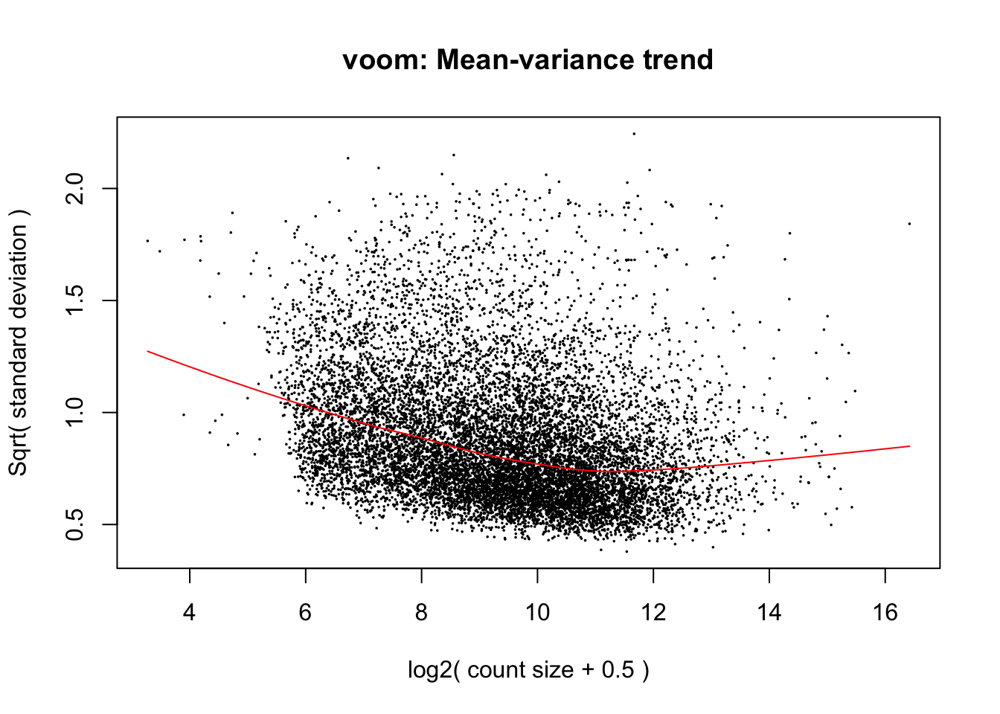
# Run linear model with new design matrix
fit.cyclic.norm <- lmFit(cpm.voom.cyclic, design, plot = TRUE, block=samples$Individual, correlation=corfit$consensus)
fit.cyclic.norm <- eBayes(fit.cyclic.norm)
# Determine the number of statistically signficant interactions
GA_LuG =topTable(fit.cyclic.norm, coef=5, adjust="BH", number=Inf, sort.by="none")
dim(GA_LuG[which(GA_LuG$adj.P.Val < FDR_level), ]) [1] 82 7 # Extract limma results
results[[test]] <- get_results(fit.cyclic.norm, coef = 5)
# Add mutliple testing correction with ASH
output_ash <- run_ash(fit.cyclic.norm, coef = 5)Due to absence of package REBayes, switching to EM algorithm results[[test]] <- cbind(results[[test]], sebetahat = output_ash$data$s, lfsr = output_ash$result$lfsr,
lfdr = output_ash$result$lfdr, qvalue = output_ash$result$qvalue,
svalue = output_ash$result$svalue, beta_est = output_ash$result$PosteriorMean, se_est =
output_ash$result$PosteriorSD)
GA_LuG_svalue <- results[[test]]
nrow(GA_LuG_svalue[which(GA_LuG_svalue$svalue < FSR_level),])[1] 174Kidneys
# Reassign species to be GA versus not GA
GA_species <- gsub("Chimp", "GA", species)
GA_species <- gsub("Human", "GA", GA_species)
# Reassign tissues to be heart versus non-heart
tissue_group <- gsub("lung", "Grouped", tissue)
tissue_group <- gsub("heart", "Grouped", tissue_group)
tissue_group <- gsub("liver", "Grouped", tissue_group)
## Make the contrast matrix and rename columns of the contrast matrix
design <- model.matrix(~ GA_species*tissue_group + RIN)
# Rename columns of the contrast matrix
colnames(design)[1] <- "Intercept"
colnames(design)[2] <- "Rhesus"
colnames(design)[3] <- "Kidney"
colnames(design)[4] <- "RIN"
colnames(design)[5] <- "Rhesus_kidney"
# Look at the number of samples in each column
colSums(design) Intercept Rhesus Kidney RIN Rhesus_kidney
47.0 16.0 12.0 368.2 4.0 cpm.voom.cyclic <- voom(dge_in_cutoff, design, normalize.method="cyclicloess")
corfit <- duplicateCorrelation(cpm.voom.cyclic, design, block=samples$Individual)
corfit$consensus <- -0.05037098
#corfit$consensus <- 0.2177817
# Final voom on filtered data
cpm.voom.cyclic <- voom(dge_in_cutoff, design, normalize.method="cyclicloess", plot=TRUE, block=samples$Individual, correlation=corfit$consensus)# Run linear model with new design matrix
fit.cyclic.norm <- lmFit(cpm.voom.cyclic, design, plot = TRUE, block=samples$Individual, correlation=corfit$consensus)
fit.cyclic.norm <- eBayes(fit.cyclic.norm)
# Determine the number of statistically signficant interactions
GA_KG =topTable(fit.cyclic.norm, coef=5, adjust="BH", number=Inf, sort.by="none")
dim(GA_KG[which(GA_KG$adj.P.Val < FDR_level), ]) [1] 56 7 # Extract limma results
results[[test]] <- get_results(fit.cyclic.norm, coef = 5)
# Add mutliple testing correction with ASH
output_ash <- run_ash(fit.cyclic.norm, coef = 5)Due to absence of package REBayes, switching to EM algorithm results[[test]] <- cbind(results[[test]], sebetahat = output_ash$data$s, lfsr = output_ash$result$lfsr,
lfdr = output_ash$result$lfdr, qvalue = output_ash$result$qvalue,
svalue = output_ash$result$svalue, beta_est = output_ash$result$PosteriorMean, se_est =
output_ash$result$PosteriorSD)
GA_KG_svalue <- results[[test]]
nrow(GA_KG_svalue[which(GA_KG_svalue$svalue < FSR_level),])[1] 58# Find tissue specific
# bind s values together
GA_svalue <- cbind(GA_HG_svalue$svalue, GA_LiG_svalue$svalue, GA_LuG_svalue$svalue, GA_KG_svalue$svalue)
# Heart tissue specific
nrow(GA_svalue[which(GA_svalue[,1] < FSR_level & GA_svalue[,2] > FSR_level & GA_svalue[,3] > FSR_level & GA_svalue[,4] > FSR_level), ])[1] 377# Liver tissue specific
nrow(GA_svalue[which(GA_svalue[,1] > FSR_level & GA_svalue[,2] < FSR_level & GA_svalue[,3] > FSR_level & GA_svalue[,4] > FSR_level), ])[1] 283# Lung tissue specific
nrow(GA_svalue[which(GA_svalue[,1] > FSR_level & GA_svalue[,2] > FSR_level & GA_svalue[,3] < FSR_level & GA_svalue[,4] > FSR_level), ])[1] 161# Kidney tissue specific
nrow(GA_svalue[which(GA_svalue[,1] > FSR_level & GA_svalue[,2] > FSR_level & GA_svalue[,3] > FSR_level & GA_svalue[,4] < FSR_level), ])[1] 57# 377, 283, 161, 57
exp <- t(as.data.frame(cpm_12184[grepl("ENSG00000008282", rownames(cpm_12184)), ]))
make_exp_df <- as.data.frame(cbind(exp, GA_species, tissue), stringsAsFactors = F)
make_exp_df[,1] <- as.numeric(make_exp_df[,1])
#levels(make_exp_df$species) <- c("Great Ape", "Rhesus")
colnames(make_exp_df) <- c("Normalized Gene Expression", "Species", "Tissue")
ggplot(make_exp_df, aes(x=as.factor(Tissue), y=make_exp_df[,1], fill=as.factor(Tissue))) + geom_boxplot() + facet_wrap(~make_exp_df[,2]) + xlab("Tissue") + ylab("Normalized Gene Expression") + scale_x_discrete(labels=c("Heart","Kidney","Liver", "Lung")) + bjp + theme(legend.position="none") + ggtitle("SYPL (ENSG00000008282)") 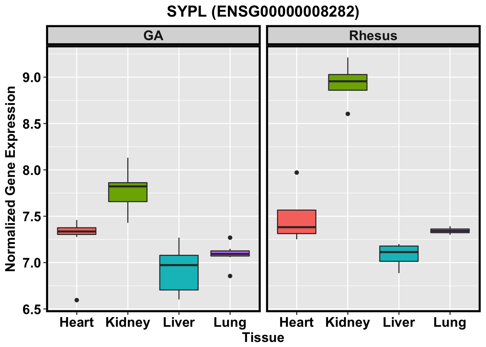
ggplot(make_exp_df, aes(x=as.factor(Tissue), y=make_exp_df[,1], fill=Tissue)) + geom_boxplot() + facet_wrap(~make_exp_df[,2]) + xlab("Tissue") + ylab("Normalized Gene Expression") + scale_x_discrete(labels=c("Heart","Kidney","Liver", "Lung")) + bjp + ggtitle("SYPL (ENSG00000008282)") + scale_fill_discrete(labels=c("Heart","Kidney","Liver", "Lung"))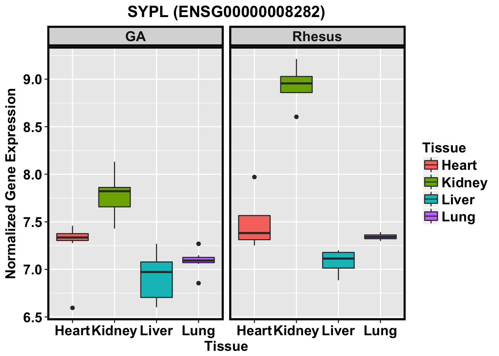
Great Ape Tissue Specific (using FDR)
# Set FDR level
FDR_level <- 0.01
GA_BHpvalue <- cbind(GA_HG[,6], GA_LiG[,6], GA_LuG[,6], GA_KG[,6])
# Interactions between GA hearts and other tissues
nrow(GA_BHpvalue[which(GA_BHpvalue[,1] < FDR_level & GA_BHpvalue[,2] > FDR_level & GA_BHpvalue[,3] > FDR_level & GA_BHpvalue[,4] > FDR_level), ])[1] 220# Interactions between GA livers and other tissues
nrow(GA_BHpvalue[which(GA_BHpvalue[,1] > FDR_level & GA_BHpvalue[,2] < FDR_level & GA_BHpvalue[,3] > FDR_level & GA_BHpvalue[,4] > FDR_level), ])[1] 253# Interactions between GA lungs and other tissues
nrow(GA_BHpvalue[which(GA_BHpvalue[,1] > FDR_level & GA_BHpvalue[,2] > FDR_level & GA_BHpvalue[,3] < FDR_level & GA_BHpvalue[,4] > FDR_level), ])[1] 74# Interactions between GA kidneys and other tissues
nrow(GA_BHpvalue[which(GA_BHpvalue[,1] > FDR_level & GA_BHpvalue[,2] > FDR_level & GA_BHpvalue[,3] > FDR_level & GA_BHpvalue[,4] < FDR_level), ])[1] 54Combining chimps and rhesus to have a human versus non-human tissues set of interactions
Hearts
# Reassign species to be human versus non-human (GA)
GA_species <- gsub("Chimp", "GA", species)
GA_species <- gsub("Rhesus", "GA", GA_species)
# Reassign tissues to be heart versus non-heart
tissue_group <- gsub("kidney", "Grouped", tissue)
tissue_group <- gsub("liver", "Grouped", tissue_group)
tissue_group <- gsub("lung", "Grouped", tissue_group)
## Make the contrast matrix and rename columns of the contrast matrix
design <- model.matrix(~ GA_species*tissue_group + RIN)
# Rename columns of the contrast matrix
colnames(design)[1] <- "Intercept"
colnames(design)[2] <- "Rhesus"
colnames(design)[3] <- "Heart"
colnames(design)[4] <- "RIN"
colnames(design)[5] <- "Rhesus_heart"
# Look at the number of samples in each column
colSums(design) Intercept Rhesus Heart RIN Rhesus_heart
47.0 15.0 11.0 368.2 3.0 cpm.voom.cyclic <- voom(dge_in_cutoff, design, normalize.method="cyclicloess")
corfit <- duplicateCorrelation(cpm.voom.cyclic, design, block=samples$Individual)
corfit$consensus <- -0.01741244
#corfit$consensus <- 0.2177817
# Final voom on filtered data
cpm.voom.cyclic <- voom(dge_in_cutoff, design, normalize.method="cyclicloess", plot=TRUE, block=samples$Individual, correlation=corfit$consensus)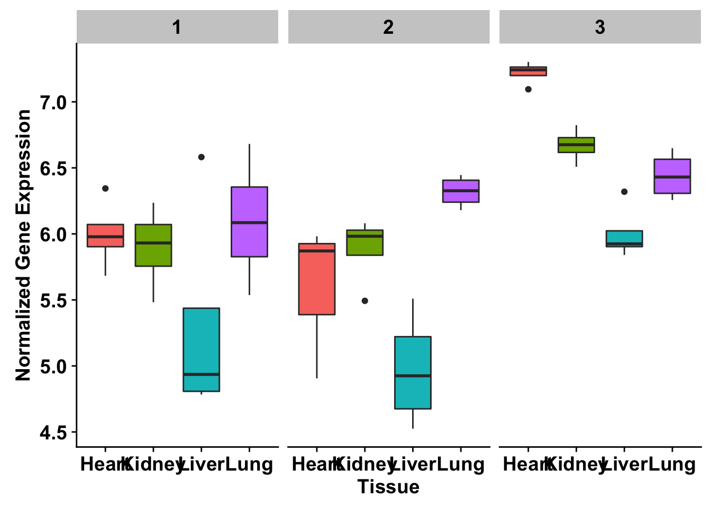
# Run linear model with new design matrix
fit.cyclic.norm <- lmFit(cpm.voom.cyclic, design, plot = TRUE, block=samples$Individual, correlation=corfit$consensus)
fit.cyclic.norm <- eBayes(fit.cyclic.norm)
# Determine the number of statistically signficant interactions
NH_HG =topTable(fit.cyclic.norm, coef=5, adjust="BH", number=Inf, sort.by="none")
dim(NH_HG[which(NH_HG$adj.P.Val < FDR_level), ]) [1] 57 7 # Extract limma results
results[[test]] <- get_results(fit.cyclic.norm, coef = 5)
# Add mutliple testing correction with ASH
output_ash <- run_ash(fit.cyclic.norm, coef = 5)Due to absence of package REBayes, switching to EM algorithm results[[test]] <- cbind(results[[test]], sebetahat = output_ash$data$s, lfsr = output_ash$result$lfsr,
lfdr = output_ash$result$lfdr, qvalue = output_ash$result$qvalue,
svalue = output_ash$result$svalue, beta_est = output_ash$result$PosteriorMean, se_est =
output_ash$result$PosteriorSD)
NH_HG_svalue <- results[[test]]
nrow(NH_HG_svalue[which(NH_HG_svalue$svalue < FSR_level),])[1] 200Livers
# Reassign species to be GA versus not GA
GA_species <- gsub("Chimp", "GA", species)
GA_species <- gsub("Rhesus", "GA", GA_species)
# Reassign tissues to be heart versus non-heart
# Reassign tissues to be liver versus non-liver
tissue_group <- gsub("kidney", "Grouped", tissue)
tissue_group <- gsub("heart", "Grouped", tissue_group)
tissue_group <- gsub("lung", "Grouped", tissue_group)
## Make the contrast matrix and rename columns of the contrast matrix
design <- model.matrix(~ GA_species*tissue_group + RIN)
# Rename columns of the contrast matrix
colnames(design)[1] <- "Intercept"
colnames(design)[2] <- "Rhesus"
colnames(design)[3] <- "Liver"
colnames(design)[4] <- "RIN"
colnames(design)[5] <- "Rhesus_liver"
# Look at the number of samples in each column
colSums(design) Intercept Rhesus Liver RIN Rhesus_liver
47.0 15.0 12.0 368.2 4.0 cpm.voom.cyclic <- voom(dge_in_cutoff, design, normalize.method="cyclicloess")
corfit <- duplicateCorrelation(cpm.voom.cyclic, design, block=samples$Individual)
corfit$consensus <- -0.01239498
#corfit$consensus <- 0.2177817
# Final voom on filtered data
cpm.voom.cyclic <- voom(dge_in_cutoff, design, normalize.method="cyclicloess", plot=TRUE, block=samples$Individual, correlation=corfit$consensus)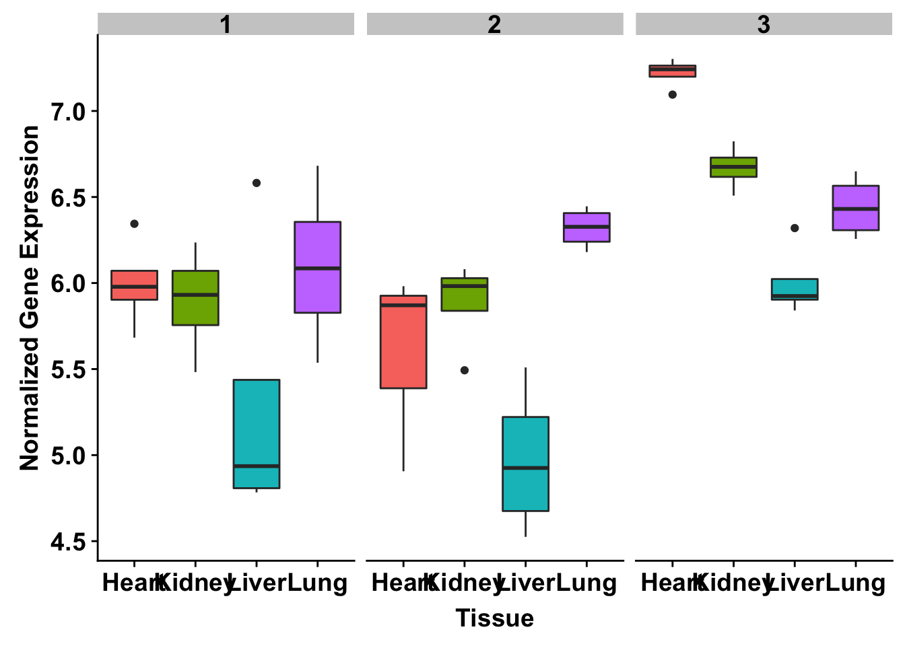
# Run linear model with new design matrix
fit.cyclic.norm <- lmFit(cpm.voom.cyclic, design, plot = TRUE, block=samples$Individual, correlation=corfit$consensus)
fit.cyclic.norm <- eBayes(fit.cyclic.norm)
# Determine the number of statistically signficant interactions
NH_LiG =topTable(fit.cyclic.norm, coef=5, adjust="BH", number=Inf, sort.by="none")
dim(NH_LiG[which(NH_LiG$adj.P.Val < FDR_level), ]) [1] 19 7 # Extract limma results
results[[test]] <- get_results(fit.cyclic.norm, coef = 5)
# Add mutliple testing correction with ASH
output_ash <- run_ash(fit.cyclic.norm, coef = 5)Due to absence of package REBayes, switching to EM algorithm results[[test]] <- cbind(results[[test]], sebetahat = output_ash$data$s, lfsr = output_ash$result$lfsr,
lfdr = output_ash$result$lfdr, qvalue = output_ash$result$qvalue,
svalue = output_ash$result$svalue, beta_est = output_ash$result$PosteriorMean, se_est =
output_ash$result$PosteriorSD)
NH_LiG_svalue <- results[[test]]
nrow(NH_LiG_svalue[which(NH_LiG_svalue$svalue < FSR_level),])[1] 29Lungs
# Reassign species to be GA versus not GA
GA_species <- gsub("Chimp", "GA", species)
GA_species <- gsub("Rhesus", "GA", GA_species)
# Reassign tissues to be heart versus non-heart
tissue_group <- gsub("kidney", "Grouped", tissue)
tissue_group <- gsub("heart", "Grouped", tissue_group)
tissue_group <- gsub("liver", "Grouped", tissue_group)
## Make the contrast matrix and rename columns of the contrast matrix
design <- model.matrix(~ GA_species*tissue_group + RIN)
# Rename columns of the contrast matrix
colnames(design)[1] <- "Intercept"
colnames(design)[2] <- "Rhesus"
colnames(design)[3] <- "Lung"
colnames(design)[4] <- "RIN"
colnames(design)[5] <- "Rhesus_lung"
# Look at the number of samples in each column
colSums(design) Intercept Rhesus Lung RIN Rhesus_lung
47.0 15.0 12.0 368.2 4.0 cpm.voom.cyclic <- voom(dge_in_cutoff, design, normalize.method="cyclicloess")
corfit <- duplicateCorrelation(cpm.voom.cyclic, design, block=samples$Individual)Warning in glmgam.fit(dx, dy, coef.start = start, tol = tol, maxit =
maxit, : Too much damping - convergence tolerance not achievable#corfit$consensus <- 0
#corfit$consensus <- 0.2177817
# Final voom on filtered data
cpm.voom.cyclic <- voom(dge_in_cutoff, design, normalize.method="cyclicloess", plot=TRUE, block=samples$Individual, correlation=corfit$consensus)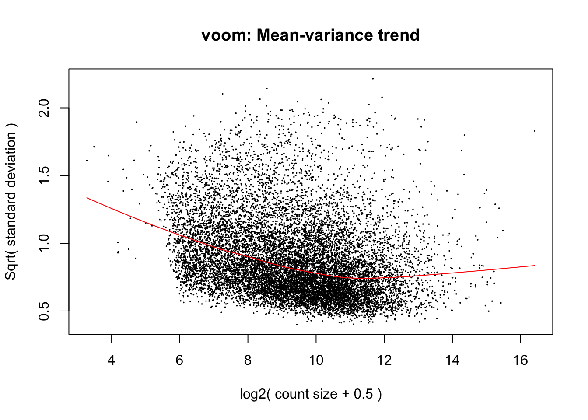
# Run linear model with new design matrix
fit.cyclic.norm <- lmFit(cpm.voom.cyclic, design)
fit.cyclic.norm <- eBayes(fit.cyclic.norm)
# Determine the number of statistically signficant interactions
NH_LuG =topTable(fit.cyclic.norm, coef=5, adjust="BH", number=Inf, sort.by="none")
dim(NH_LuG[which(NH_LuG$adj.P.Val < FDR_level), ]) [1] 2 7 results[[test]] <- get_results(fit.cyclic.norm, coef = 5)
# Add mutliple testing correction with ASH
output_ash <- run_ash(fit.cyclic.norm, coef = 5)Due to absence of package REBayes, switching to EM algorithm results[[test]] <- cbind(results[[test]], sebetahat = output_ash$data$s, lfsr = output_ash$result$lfsr,
lfdr = output_ash$result$lfdr, qvalue = output_ash$result$qvalue,
svalue = output_ash$result$svalue, beta_est = output_ash$result$PosteriorMean, se_est =
output_ash$result$PosteriorSD)
NH_LuG_svalue <- results[[test]]
nrow(NH_LuG_svalue[which(NH_LuG_svalue$svalue < FSR_level),])[1] 5Kidneys
# Reassign species to be GA versus not GA
GA_species <- gsub("Chimp", "Non human", species)
GA_species <- gsub("Rhesus", "Non human", GA_species)
# Reassign tissues to be heart versus non-heart
tissue_group <- gsub("lung", "Grouped", tissue)
tissue_group <- gsub("heart", "Grouped", tissue_group)
tissue_group <- gsub("liver", "Grouped", tissue_group)
## Make the contrast matrix and rename columns of the contrast matrix
design <- model.matrix(~ GA_species*tissue_group + RIN)
# Rename columns of the contrast matrix
colnames(design)[1] <- "Intercept"
colnames(design)[2] <- "Rhesus"
colnames(design)[3] <- "Kidney"
colnames(design)[4] <- "RIN"
colnames(design)[5] <- "Rhesus_kidney"
# Look at the number of samples in each column
colSums(design) Intercept Rhesus Kidney RIN Rhesus_kidney
47.0 32.0 12.0 368.2 8.0 cpm.voom.cyclic <- voom(dge_in_cutoff, design, normalize.method="cyclicloess")
corfit <- duplicateCorrelation(cpm.voom.cyclic, design, block=samples$Individual)
corfit$consensus <- -0.05638723
#corfit$consensus <- 0.2177817
# Final voom on filtered data
cpm.voom.cyclic <- voom(dge_in_cutoff, design, normalize.method="cyclicloess", plot=TRUE, block=samples$Individual, correlation=corfit$consensus)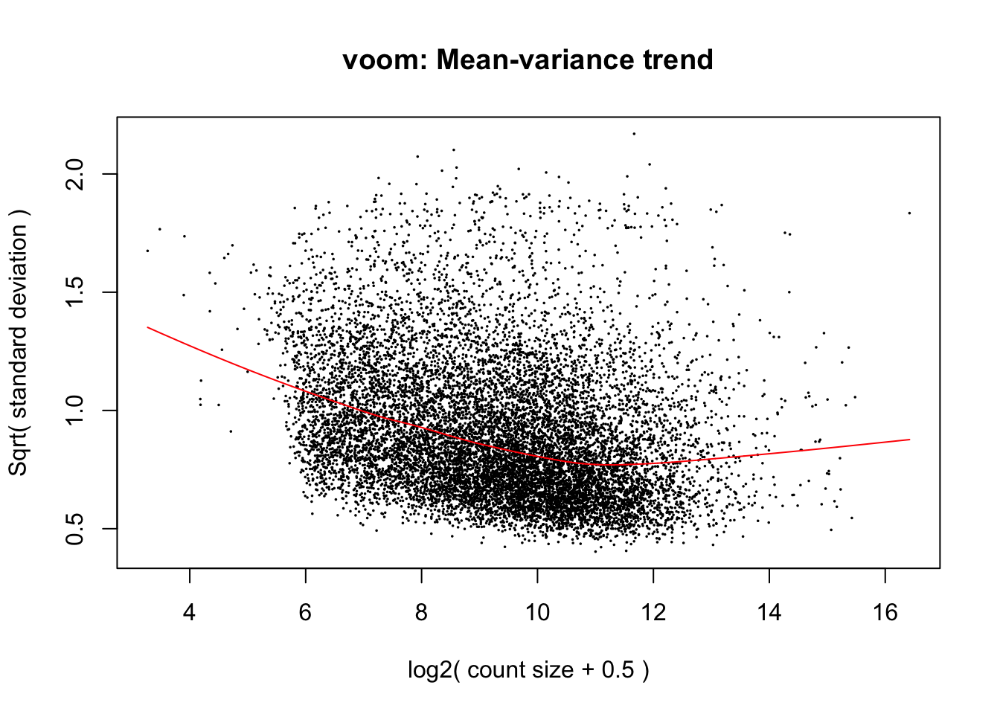
# Run linear model with new design matrix
fit.cyclic.norm <- lmFit(cpm.voom.cyclic, design, plot = TRUE, block=samples$Individual, correlation=corfit$consensus)
fit.cyclic.norm <- eBayes(fit.cyclic.norm)
# Determine the number of statistically signficant interactions
NH_KG =topTable(fit.cyclic.norm, coef=5, adjust="BH", number=Inf, sort.by="none")
dim(NH_KG[which(NH_KG$adj.P.Val < FDR_level), ]) [1] 8 7 # Extract limma results
results[[test]] <- get_results(fit.cyclic.norm, coef = 5)
# Add mutliple testing correction with ASH
output_ash <- run_ash(fit.cyclic.norm, coef = 5)Due to absence of package REBayes, switching to EM algorithm results[[test]] <- cbind(results[[test]], sebetahat = output_ash$data$s, lfsr = output_ash$result$lfsr,
lfdr = output_ash$result$lfdr, qvalue = output_ash$result$qvalue,
svalue = output_ash$result$svalue, beta_est = output_ash$result$PosteriorMean, se_est =
output_ash$result$PosteriorSD)
NH_KG_svalue <- results[[test]]
nrow(NH_KG_svalue[which(NH_KG_svalue$svalue < FSR_level),])[1] 5exp <- t(as.data.frame(cpm_12184[grepl("ENSG00000240230", rownames(cpm_12184)), ]))
make_exp_df <- as.data.frame(cbind(exp, GA_species, tissue), stringsAsFactors = F)
make_exp_df[,1] <- as.numeric(make_exp_df[,1])
levels(make_exp_df$GA_species) <- c("Human", "Non-Human")
colnames(make_exp_df) <- c("Normalized Gene Expression", "Species", "Tissue")
ggplot(make_exp_df, aes(x=as.factor(Tissue), y=make_exp_df[,1], fill=as.factor(Tissue))) + geom_boxplot() + facet_wrap(~Species) + xlab("Tissue") + ylab("Normalized Gene Expression") + scale_x_discrete(labels=c("Heart","Kidney","Liver", "Lung")) + bjp + theme(legend.position="none") + ggtitle("COX19 (ENSG00000240230)") 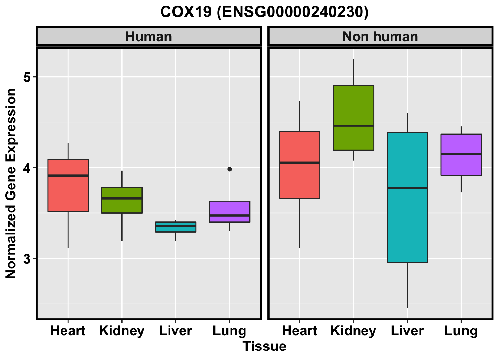
Human/Non-Human Tissue Specific (using FDR)
# Set FDR level
FDR_level <- 0.01
GA_BHpvalue <- cbind(NH_HG[,6], NH_LiG[,6], NH_LuG[,6], NH_KG[,6])
# Interactions between GA hearts and other tissues
nrow(GA_BHpvalue[which(GA_BHpvalue[,1] < FSR_level & GA_BHpvalue[,2] > FSR_level & GA_BHpvalue[,3] > FSR_level & GA_BHpvalue[,4] > FSR_level), ])[1] 57# Interactions between GA livers and other tissues
nrow(GA_BHpvalue[which(GA_BHpvalue[,1] > FSR_level & GA_BHpvalue[,2] < FSR_level & GA_BHpvalue[,3] > FSR_level & GA_BHpvalue[,4] > FSR_level), ])[1] 19# Interactions between GA lungs and other tissues
nrow(GA_BHpvalue[which(GA_BHpvalue[,1] > FSR_level & GA_BHpvalue[,2] > FSR_level & GA_BHpvalue[,3] < FSR_level & GA_BHpvalue[,4] > FSR_level), ])[1] 2# Interactions between GA kidneys and other tissues
nrow(GA_BHpvalue[which(GA_BHpvalue[,1] > FSR_level & GA_BHpvalue[,2] > FSR_level & GA_BHpvalue[,3] > FSR_level & GA_BHpvalue[,4] < FSR_level), ])[1] 8# 57, 19, 2, 8# Find tissue specific
# bind s values together
NH_svalue <- cbind(NH_HG_svalue$svalue, NH_LiG_svalue$svalue, NH_LuG_svalue$svalue, NH_KG_svalue$svalue)
# Heart tissue specific
nrow(NH_svalue[which(NH_svalue[,1] < FSR_level & NH_svalue[,2] > FSR_level & NH_svalue[,3] > FSR_level & NH_svalue[,4] > FSR_level), ])[1] 199# Liver tissue specific
nrow(NH_svalue[which(NH_svalue[,1] > FSR_level & NH_svalue[,2] < FSR_level & NH_svalue[,3] > FSR_level & NH_svalue[,4] > FSR_level), ])[1] 28# Lung tissue specific
nrow(NH_svalue[which(NH_svalue[,1] > FSR_level & NH_svalue[,2] > FSR_level & NH_svalue[,3] < FSR_level & NH_svalue[,4] > FSR_level), ])[1] 5# Kidney tissue specific
nrow(NH_svalue[which(NH_svalue[,1] > FSR_level & NH_svalue[,2] > FSR_level & NH_svalue[,3] > FSR_level & NH_svalue[,4] < FSR_level), ])[1] 5# 199, 28, 5, 5